ChatGPT 1枚絵の依頼
使い方
- キャラクターごとに ChatGPT の新しい会話を始め、「最初に1回だけ送る文」を、そのキャラクターの見た目の画像を添付して送る
- 「OK」が返ったら、番号順に「文をコピー」→ ChatGPT に貼り、そのポーズ一覧（番号つきの画像）を添付して送る。1回で最大16枚
- できた絵（ZIP か、名前の付いた画像）を、送るページの「まとめて送る」で選ぶ。ファイル名で、どのコマか自動で決まる
名前が付いていない絵は、送るページでコマを選んでから1枚ずつ送れる。
絵柄や頭身がずれてきたら、最初の文と見た目の画像をもう一度送る。
攻撃の図の白い線は剣、盾は円盤。杖・ナイフも図に描いてある。
拘束・床・口づけなどの場面の絵は NovelAI で作る（場面の説明）。ここにはない。
アリア（戦士） 144コマ・10回
最初に1回だけ送る文（見た目の画像を添付）
添付する画像：warrior-source.png（ゲームの8方向の絵）と、必要なら設定画 warrior.jpg


これから、2Dゲームのキャラクターのアニメーション用の絵を、何枚かずつまとめてお願いします。 ・添付の画像のキャラクター「アリア」を、同じ絵柄・同じ頭身（小さめのデフォルメ）・同じ衣装と色で描いてください。 ・持ち物と特徴：右手に剣、左腕に丸い盾（青い模様）。腰に剣の鞘。 ・毎回、番号つきの「ポーズ一覧」の画像を添付し、番号ごとに向きと動きを書きます。番号1つにつき1枚の別々の画像を描いてください（1枚に並べない）。 ・姿勢・向き・手足と持ち物の位置は、ポーズ一覧の図（マネキン）に合わせてください。図の色の意味：青＝キャラクター本人の右半身、橙＝左半身、灰色＝胴と頭。図の線・色・関節の丸・番号は描かないでください。 ・1枚ごとに正方形（1024×1024）。全身が入るように上下左右に1割くらいの余白をとり、立っているときの足元は、どの絵も画像の下から1割くらいの高さにそろえてください。キャラクターの大きさも、どの絵でもそろえてください。 ・背景は透明（できなければ真っ白の無地）。影・床・効果線・文字・枠は描かないでください。 ・ファイル名は、番号ごとに指定する名前にしてください。できれば全部を1つのZIPにまとめてください。 ・描いた絵を縮小・減色・切り抜きしないでください（描いたままの PNG）。 わかったら「OK」とだけ返してください。
まとめて送る文（そのポーズ一覧を添付）
1. 通常斬り（踏み込み振り下ろし）（1/2） 16枚
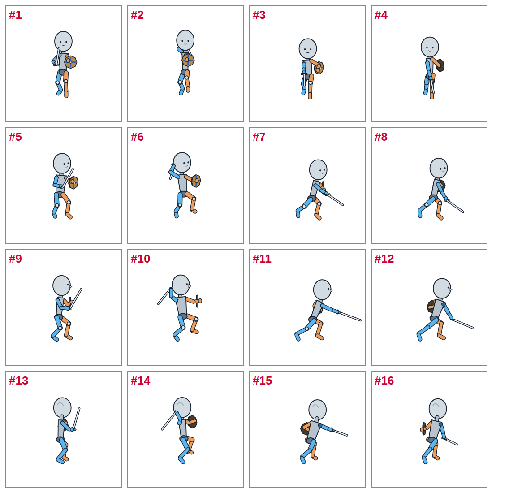
ポーズ一覧を保存

通常斬り（踏み込み振り下ろし）（1/2）：16枚 添付のポーズ一覧の番号どおりに、1枚ずつ別の画像で描いてください。決まりは最初の文のとおりです。 #1 → aria__slash__front__0.png 向き：正面（こちらを向く）／12コマのうち1コマ目（構え） guard: lead (shield) foot forward, wide stance, knees soft, blade up #2 → aria__slash__front__3.png 向き：正面（こちらを向く）／12コマのうち4コマ目（溜め） cocked: wrist bent back, the blade hangs down her back; the rear foot drives her on #3 → aria__slash__front__6.png 向き：正面（こちらを向く）／12コマのうち7コマ目（命中） impact (hit-stop): the wrist snaps - arm and blade one straight line; front knee deep, rear leg long #4 → aria__slash__front__7.png 向き：正面（こちらを向く）／12コマのうち8コマ目（振り抜き） follow-through: the straight arm carries on right down to her front knee; the blade stays shallower than the arm (the wrist turns up) - cut through, not stuck in #5 → aria__slash__down_right__0.png 向き：斜め前（体の正面が画面の右手前を向く）／12コマのうち1コマ目（構え） guard: lead (shield) foot forward, wide stance, knees soft, blade up #6 → aria__slash__down_right__3.png 向き：斜め前（体の正面が画面の右手前を向く）／12コマのうち4コマ目（溜め） cocked: wrist bent back, the blade hangs down her back; the rear foot drives her on #7 → aria__slash__down_right__6.png 向き：斜め前（体の正面が画面の右手前を向く）／12コマのうち7コマ目（命中） impact (hit-stop): the wrist snaps - arm and blade one straight line; front knee deep, rear leg long #8 → aria__slash__down_right__7.png 向き：斜め前（体の正面が画面の右手前を向く）／12コマのうち8コマ目（振り抜き） follow-through: the straight arm carries on right down to her front knee; the blade stays shallower than the arm (the wrist turns up) - cut through, not stuck in #9 → aria__slash__right__0.png 向き：真横（画面の右を向く横顔）／12コマのうち1コマ目（構え） guard: lead (shield) foot forward, wide stance, knees soft, blade up #10 → aria__slash__right__3.png 向き：真横（画面の右を向く横顔）／12コマのうち4コマ目（溜め） cocked: wrist bent back, the blade hangs down her back; the rear foot drives her on #11 → aria__slash__right__6.png 向き：真横（画面の右を向く横顔）／12コマのうち7コマ目（命中） impact (hit-stop): the wrist snaps - arm and blade one straight line; front knee deep, rear leg long #12 → aria__slash__right__7.png 向き：真横（画面の右を向く横顔）／12コマのうち8コマ目（振り抜き） follow-through: the straight arm carries on right down to her front knee; the blade stays shallower than the arm (the wrist turns up) - cut through, not stuck in #13 → aria__slash__up_right__0.png 向き：斜め後ろ（背中が見え、画面の右奥を向く）／12コマのうち1コマ目（構え） guard: lead (shield) foot forward, wide stance, knees soft, blade up #14 → aria__slash__up_right__3.png 向き：斜め後ろ（背中が見え、画面の右奥を向く）／12コマのうち4コマ目（溜め） cocked: wrist bent back, the blade hangs down her back; the rear foot drives her on #15 → aria__slash__up_right__6.png 向き：斜め後ろ（背中が見え、画面の右奥を向く）／12コマのうち7コマ目（命中） impact (hit-stop): the wrist snaps - arm and blade one straight line; front knee deep, rear leg long #16 → aria__slash__up_right__7.png 向き：斜め後ろ（背中が見え、画面の右奥を向く）／12コマのうち8コマ目（振り抜き） follow-through: the straight arm carries on right down to her front knee; the blade stays shallower than the arm (the wrist turns up) - cut through, not stuck in
2. 通常斬り（踏み込み振り下ろし）（2/2） 16枚
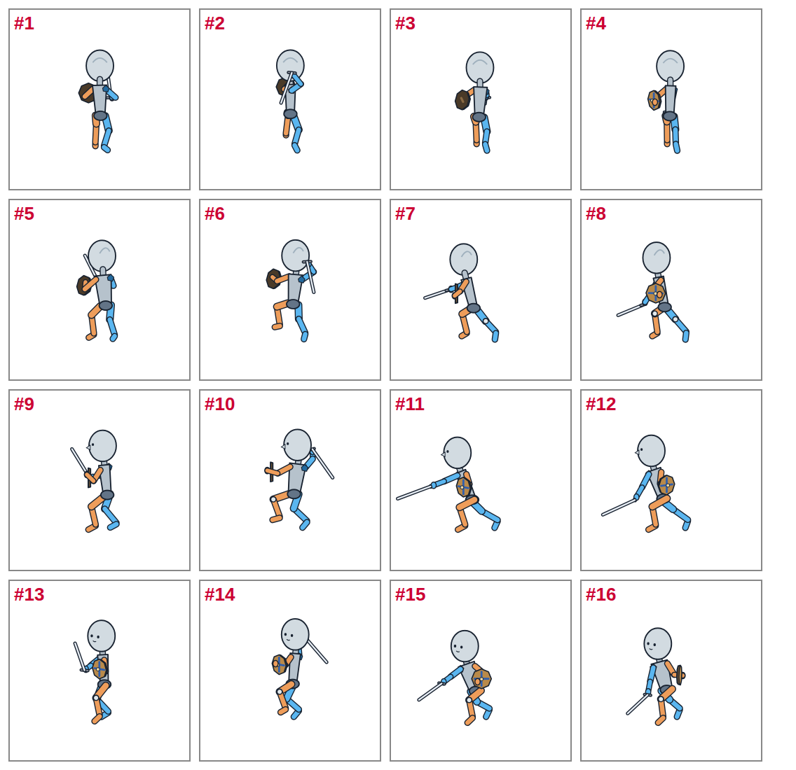
ポーズ一覧を保存

通常斬り（踏み込み振り下ろし）（2/2）：16枚 添付のポーズ一覧の番号どおりに、1枚ずつ別の画像で描いてください。決まりは最初の文のとおりです。 #1 → aria__slash__back__0.png 向き：後ろ（背中）／12コマのうち1コマ目（構え） guard: lead (shield) foot forward, wide stance, knees soft, blade up #2 → aria__slash__back__3.png 向き：後ろ（背中）／12コマのうち4コマ目（溜め） cocked: wrist bent back, the blade hangs down her back; the rear foot drives her on #3 → aria__slash__back__6.png 向き：後ろ（背中）／12コマのうち7コマ目（命中） impact (hit-stop): the wrist snaps - arm and blade one straight line; front knee deep, rear leg long #4 → aria__slash__back__7.png 向き：後ろ（背中）／12コマのうち8コマ目（振り抜き） follow-through: the straight arm carries on right down to her front knee; the blade stays shallower than the arm (the wrist turns up) - cut through, not stuck in #5 → aria__slash__up_left__0.png 向き：斜め後ろ（背中が見え、画面の左奥を向く）／12コマのうち1コマ目（構え） guard: lead (shield) foot forward, wide stance, knees soft, blade up #6 → aria__slash__up_left__3.png 向き：斜め後ろ（背中が見え、画面の左奥を向く）／12コマのうち4コマ目（溜め） cocked: wrist bent back, the blade hangs down her back; the rear foot drives her on #7 → aria__slash__up_left__6.png 向き：斜め後ろ（背中が見え、画面の左奥を向く）／12コマのうち7コマ目（命中） impact (hit-stop): the wrist snaps - arm and blade one straight line; front knee deep, rear leg long #8 → aria__slash__up_left__7.png 向き：斜め後ろ（背中が見え、画面の左奥を向く）／12コマのうち8コマ目（振り抜き） follow-through: the straight arm carries on right down to her front knee; the blade stays shallower than the arm (the wrist turns up) - cut through, not stuck in #9 → aria__slash__left__0.png 向き：真横（画面の左を向く横顔）／12コマのうち1コマ目（構え） guard: lead (shield) foot forward, wide stance, knees soft, blade up #10 → aria__slash__left__3.png 向き：真横（画面の左を向く横顔）／12コマのうち4コマ目（溜め） cocked: wrist bent back, the blade hangs down her back; the rear foot drives her on #11 → aria__slash__left__6.png 向き：真横（画面の左を向く横顔）／12コマのうち7コマ目（命中） impact (hit-stop): the wrist snaps - arm and blade one straight line; front knee deep, rear leg long #12 → aria__slash__left__7.png 向き：真横（画面の左を向く横顔）／12コマのうち8コマ目（振り抜き） follow-through: the straight arm carries on right down to her front knee; the blade stays shallower than the arm (the wrist turns up) - cut through, not stuck in #13 → aria__slash__down_left__0.png 向き：斜め前（体の正面が画面の左手前を向く）／12コマのうち1コマ目（構え） guard: lead (shield) foot forward, wide stance, knees soft, blade up #14 → aria__slash__down_left__3.png 向き：斜め前（体の正面が画面の左手前を向く）／12コマのうち4コマ目（溜め） cocked: wrist bent back, the blade hangs down her back; the rear foot drives her on #15 → aria__slash__down_left__6.png 向き：斜め前（体の正面が画面の左手前を向く）／12コマのうち7コマ目（命中） impact (hit-stop): the wrist snaps - arm and blade one straight line; front knee deep, rear leg long #16 → aria__slash__down_left__7.png 向き：斜め前（体の正面が画面の左手前を向く）／12コマのうち8コマ目（振り抜き） follow-through: the straight arm carries on right down to her front knee; the blade stays shallower than the arm (the wrist turns up) - cut through, not stuck in
3. 破城斬り（跳び上がって叩きつけ）（1/2） 16枚
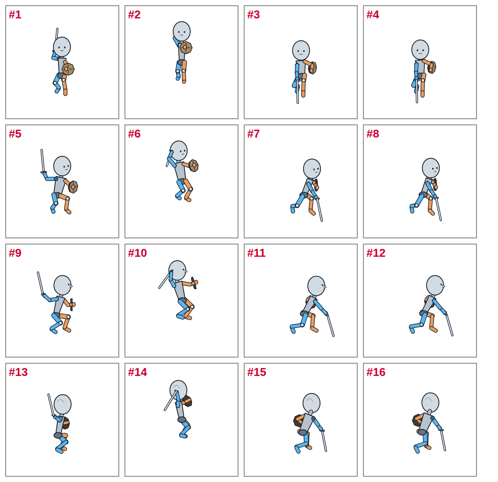
ポーズ一覧を保存

破城斬り（跳び上がって叩きつけ）（1/2）：16枚 添付のポーズ一覧の番号どおりに、1枚ずつ別の画像で描いてください。決まりは最初の文のとおりです。 #1 → aria__heavy__front__1.png 向き：正面（こちらを向く）／11コマのうち2コマ目（溜め） deep crouch over the rear foot, blade drawn up and back #2 → aria__heavy__front__3.png 向き：正面（こちらを向く）／11コマのうち4コマ目（頂点） apex: hangs in the air, bowed back, blade hanging down the back #3 → aria__heavy__front__6.png 向き：正面（こちらを向く）／11コマのうち7コマ目（叩きつけ） SLAM (hit): wrist snapped, blade driven into the floor #4 → aria__heavy__front__7.png 向き：正面（こちらを向く）／11コマのうち8コマ目（衝撃） shock: holds while the floor cracks #5 → aria__heavy__down_right__1.png 向き：斜め前（体の正面が画面の右手前を向く）／11コマのうち2コマ目（溜め） deep crouch over the rear foot, blade drawn up and back #6 → aria__heavy__down_right__3.png 向き：斜め前（体の正面が画面の右手前を向く）／11コマのうち4コマ目（頂点） apex: hangs in the air, bowed back, blade hanging down the back #7 → aria__heavy__down_right__6.png 向き：斜め前（体の正面が画面の右手前を向く）／11コマのうち7コマ目（叩きつけ） SLAM (hit): wrist snapped, blade driven into the floor #8 → aria__heavy__down_right__7.png 向き：斜め前（体の正面が画面の右手前を向く）／11コマのうち8コマ目（衝撃） shock: holds while the floor cracks #9 → aria__heavy__right__1.png 向き：真横（画面の右を向く横顔）／11コマのうち2コマ目（溜め） deep crouch over the rear foot, blade drawn up and back #10 → aria__heavy__right__3.png 向き：真横（画面の右を向く横顔）／11コマのうち4コマ目（頂点） apex: hangs in the air, bowed back, blade hanging down the back #11 → aria__heavy__right__6.png 向き：真横（画面の右を向く横顔）／11コマのうち7コマ目（叩きつけ） SLAM (hit): wrist snapped, blade driven into the floor #12 → aria__heavy__right__7.png 向き：真横（画面の右を向く横顔）／11コマのうち8コマ目（衝撃） shock: holds while the floor cracks #13 → aria__heavy__up_right__1.png 向き：斜め後ろ（背中が見え、画面の右奥を向く）／11コマのうち2コマ目（溜め） deep crouch over the rear foot, blade drawn up and back #14 → aria__heavy__up_right__3.png 向き：斜め後ろ（背中が見え、画面の右奥を向く）／11コマのうち4コマ目（頂点） apex: hangs in the air, bowed back, blade hanging down the back #15 → aria__heavy__up_right__6.png 向き：斜め後ろ（背中が見え、画面の右奥を向く）／11コマのうち7コマ目（叩きつけ） SLAM (hit): wrist snapped, blade driven into the floor #16 → aria__heavy__up_right__7.png 向き：斜め後ろ（背中が見え、画面の右奥を向く）／11コマのうち8コマ目（衝撃） shock: holds while the floor cracks
4. 破城斬り（跳び上がって叩きつけ）（2/2） 16枚
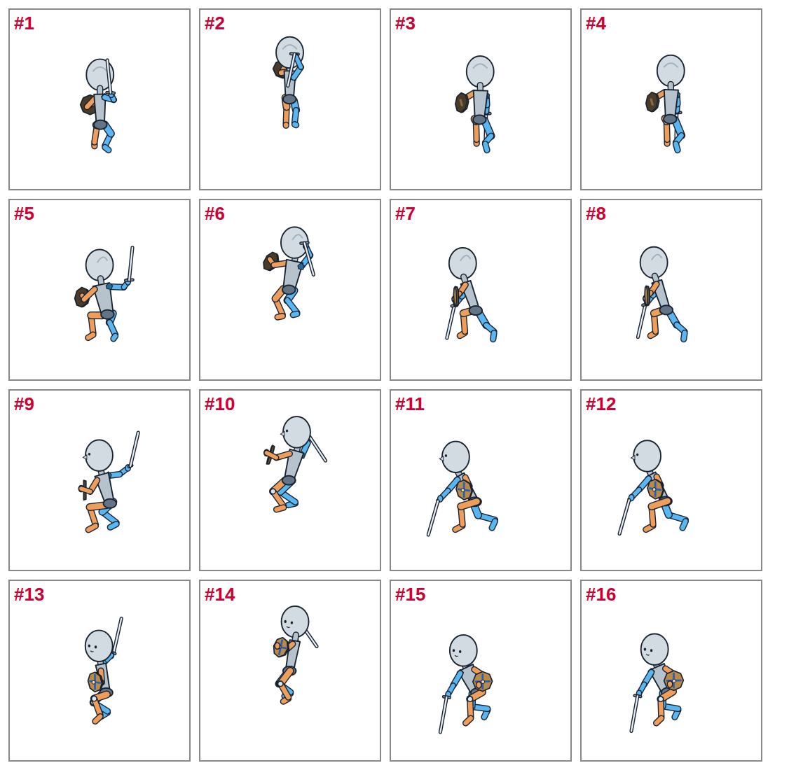
ポーズ一覧を保存

破城斬り（跳び上がって叩きつけ）（2/2）：16枚 添付のポーズ一覧の番号どおりに、1枚ずつ別の画像で描いてください。決まりは最初の文のとおりです。 #1 → aria__heavy__back__1.png 向き：後ろ（背中）／11コマのうち2コマ目（溜め） deep crouch over the rear foot, blade drawn up and back #2 → aria__heavy__back__3.png 向き：後ろ（背中）／11コマのうち4コマ目（頂点） apex: hangs in the air, bowed back, blade hanging down the back #3 → aria__heavy__back__6.png 向き：後ろ（背中）／11コマのうち7コマ目（叩きつけ） SLAM (hit): wrist snapped, blade driven into the floor #4 → aria__heavy__back__7.png 向き：後ろ（背中）／11コマのうち8コマ目（衝撃） shock: holds while the floor cracks #5 → aria__heavy__up_left__1.png 向き：斜め後ろ（背中が見え、画面の左奥を向く）／11コマのうち2コマ目（溜め） deep crouch over the rear foot, blade drawn up and back #6 → aria__heavy__up_left__3.png 向き：斜め後ろ（背中が見え、画面の左奥を向く）／11コマのうち4コマ目（頂点） apex: hangs in the air, bowed back, blade hanging down the back #7 → aria__heavy__up_left__6.png 向き：斜め後ろ（背中が見え、画面の左奥を向く）／11コマのうち7コマ目（叩きつけ） SLAM (hit): wrist snapped, blade driven into the floor #8 → aria__heavy__up_left__7.png 向き：斜め後ろ（背中が見え、画面の左奥を向く）／11コマのうち8コマ目（衝撃） shock: holds while the floor cracks #9 → aria__heavy__left__1.png 向き：真横（画面の左を向く横顔）／11コマのうち2コマ目（溜め） deep crouch over the rear foot, blade drawn up and back #10 → aria__heavy__left__3.png 向き：真横（画面の左を向く横顔）／11コマのうち4コマ目（頂点） apex: hangs in the air, bowed back, blade hanging down the back #11 → aria__heavy__left__6.png 向き：真横（画面の左を向く横顔）／11コマのうち7コマ目（叩きつけ） SLAM (hit): wrist snapped, blade driven into the floor #12 → aria__heavy__left__7.png 向き：真横（画面の左を向く横顔）／11コマのうち8コマ目（衝撃） shock: holds while the floor cracks #13 → aria__heavy__down_left__1.png 向き：斜め前（体の正面が画面の左手前を向く）／11コマのうち2コマ目（溜め） deep crouch over the rear foot, blade drawn up and back #14 → aria__heavy__down_left__3.png 向き：斜め前（体の正面が画面の左手前を向く）／11コマのうち4コマ目（頂点） apex: hangs in the air, bowed back, blade hanging down the back #15 → aria__heavy__down_left__6.png 向き：斜め前（体の正面が画面の左手前を向く）／11コマのうち7コマ目（叩きつけ） SLAM (hit): wrist snapped, blade driven into the floor #16 → aria__heavy__down_left__7.png 向き：斜め前（体の正面が画面の左手前を向く）／11コマのうち8コマ目（衝撃） shock: holds while the floor cracks
5. 袈裟懸け（右上から左下への斜め斬り）（1/2） 15枚
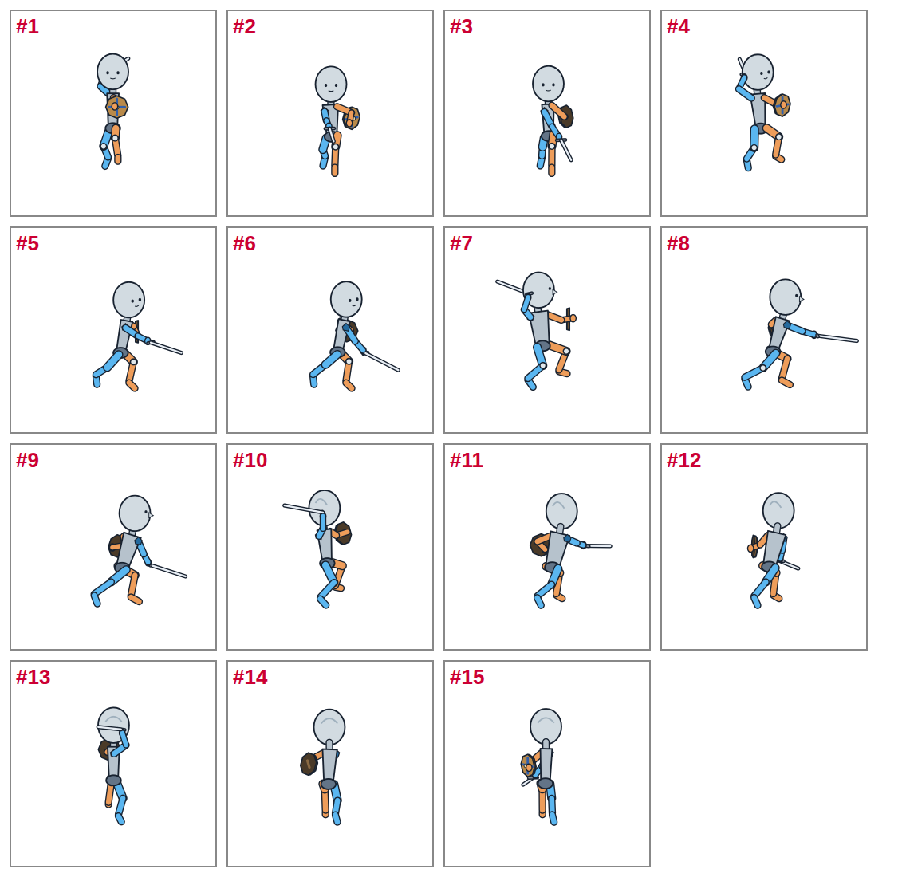
ポーズ一覧を保存

袈裟懸け（右上から左下への斜め斬り）（1/2）：15枚 添付のポーズ一覧の番号どおりに、1枚ずつ別の画像で描いてください。決まりは最初の文のとおりです。 #1 → aria__kesa__front__3.png 向き：正面（こちらを向く）／12コマのうち4コマ目（溜め） cocked: the blade hangs behind her right shoulder #2 → aria__kesa__front__6.png 向き：正面（こちらを向く）／12コマのうち7コマ目（命中） impact: wrist snapped, arm and blade in line, cutting down to her left #3 → aria__kesa__front__7.png 向き：正面（こちらを向く）／12コマのうち8コマ目（振り抜き） carried through to below her left hip #4 → aria__kesa__down_right__3.png 向き：斜め前（体の正面が画面の右手前を向く）／12コマのうち4コマ目（溜め） cocked: the blade hangs behind her right shoulder #5 → aria__kesa__down_right__6.png 向き：斜め前（体の正面が画面の右手前を向く）／12コマのうち7コマ目（命中） impact: wrist snapped, arm and blade in line, cutting down to her left #6 → aria__kesa__down_right__7.png 向き：斜め前（体の正面が画面の右手前を向く）／12コマのうち8コマ目（振り抜き） carried through to below her left hip #7 → aria__kesa__right__3.png 向き：真横（画面の右を向く横顔）／12コマのうち4コマ目（溜め） cocked: the blade hangs behind her right shoulder #8 → aria__kesa__right__6.png 向き：真横（画面の右を向く横顔）／12コマのうち7コマ目（命中） impact: wrist snapped, arm and blade in line, cutting down to her left #9 → aria__kesa__right__7.png 向き：真横（画面の右を向く横顔）／12コマのうち8コマ目（振り抜き） carried through to below her left hip #10 → aria__kesa__up_right__3.png 向き：斜め後ろ（背中が見え、画面の右奥を向く）／12コマのうち4コマ目（溜め） cocked: the blade hangs behind her right shoulder #11 → aria__kesa__up_right__6.png 向き：斜め後ろ（背中が見え、画面の右奥を向く）／12コマのうち7コマ目（命中） impact: wrist snapped, arm and blade in line, cutting down to her left #12 → aria__kesa__up_right__7.png 向き：斜め後ろ（背中が見え、画面の右奥を向く）／12コマのうち8コマ目（振り抜き） carried through to below her left hip #13 → aria__kesa__back__3.png 向き：後ろ（背中）／12コマのうち4コマ目（溜め） cocked: the blade hangs behind her right shoulder #14 → aria__kesa__back__6.png 向き：後ろ（背中）／12コマのうち7コマ目（命中） impact: wrist snapped, arm and blade in line, cutting down to her left #15 → aria__kesa__back__7.png 向き：後ろ（背中）／12コマのうち8コマ目（振り抜き） carried through to below her left hip
6. 袈裟懸け（右上から左下への斜め斬り）（2/2） 9枚
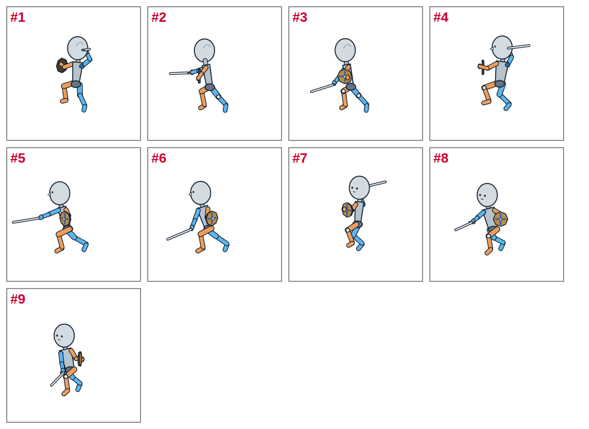
ポーズ一覧を保存

袈裟懸け（右上から左下への斜め斬り）（2/2）：9枚 添付のポーズ一覧の番号どおりに、1枚ずつ別の画像で描いてください。決まりは最初の文のとおりです。 #1 → aria__kesa__up_left__3.png 向き：斜め後ろ（背中が見え、画面の左奥を向く）／12コマのうち4コマ目（溜め） cocked: the blade hangs behind her right shoulder #2 → aria__kesa__up_left__6.png 向き：斜め後ろ（背中が見え、画面の左奥を向く）／12コマのうち7コマ目（命中） impact: wrist snapped, arm and blade in line, cutting down to her left #3 → aria__kesa__up_left__7.png 向き：斜め後ろ（背中が見え、画面の左奥を向く）／12コマのうち8コマ目（振り抜き） carried through to below her left hip #4 → aria__kesa__left__3.png 向き：真横（画面の左を向く横顔）／12コマのうち4コマ目（溜め） cocked: the blade hangs behind her right shoulder #5 → aria__kesa__left__6.png 向き：真横（画面の左を向く横顔）／12コマのうち7コマ目（命中） impact: wrist snapped, arm and blade in line, cutting down to her left #6 → aria__kesa__left__7.png 向き：真横（画面の左を向く横顔）／12コマのうち8コマ目（振り抜き） carried through to below her left hip #7 → aria__kesa__down_left__3.png 向き：斜め前（体の正面が画面の左手前を向く）／12コマのうち4コマ目（溜め） cocked: the blade hangs behind her right shoulder #8 → aria__kesa__down_left__6.png 向き：斜め前（体の正面が画面の左手前を向く）／12コマのうち7コマ目（命中） impact: wrist snapped, arm and blade in line, cutting down to her left #9 → aria__kesa__down_left__7.png 向き：斜め前（体の正面が画面の左手前を向く）／12コマのうち8コマ目（振り抜き） carried through to below her left hip
7. 横一文字（右から左への水平斬り）（1/2） 15枚
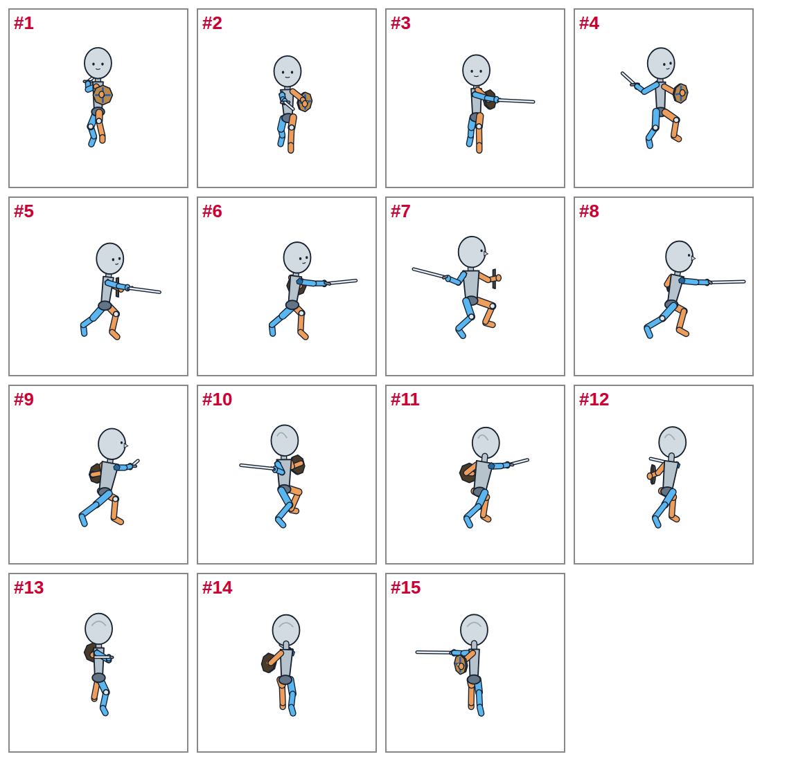
ポーズ一覧を保存

横一文字（右から左への水平斬り）（1/2）：15枚 添付のポーズ一覧の番号どおりに、1枚ずつ別の画像で描いてください。決まりは最初の文のとおりです。 #1 → aria__yoko__front__3.png 向き：正面（こちらを向く）／12コマのうち4コマ目（溜め） cocked: the blade points straight back #2 → aria__yoko__front__6.png 向き：正面（こちらを向く）／12コマのうち7コマ目（命中） impact: blade level at her chest, in line with the arm #3 → aria__yoko__front__7.png 向き：正面（こちらを向く）／12コマのうち8コマ目（振り抜き） carried round to her left #4 → aria__yoko__down_right__3.png 向き：斜め前（体の正面が画面の右手前を向く）／12コマのうち4コマ目（溜め） cocked: the blade points straight back #5 → aria__yoko__down_right__6.png 向き：斜め前（体の正面が画面の右手前を向く）／12コマのうち7コマ目（命中） impact: blade level at her chest, in line with the arm #6 → aria__yoko__down_right__7.png 向き：斜め前（体の正面が画面の右手前を向く）／12コマのうち8コマ目（振り抜き） carried round to her left #7 → aria__yoko__right__3.png 向き：真横（画面の右を向く横顔）／12コマのうち4コマ目（溜め） cocked: the blade points straight back #8 → aria__yoko__right__6.png 向き：真横（画面の右を向く横顔）／12コマのうち7コマ目（命中） impact: blade level at her chest, in line with the arm #9 → aria__yoko__right__7.png 向き：真横（画面の右を向く横顔）／12コマのうち8コマ目（振り抜き） carried round to her left #10 → aria__yoko__up_right__3.png 向き：斜め後ろ（背中が見え、画面の右奥を向く）／12コマのうち4コマ目（溜め） cocked: the blade points straight back #11 → aria__yoko__up_right__6.png 向き：斜め後ろ（背中が見え、画面の右奥を向く）／12コマのうち7コマ目（命中） impact: blade level at her chest, in line with the arm #12 → aria__yoko__up_right__7.png 向き：斜め後ろ（背中が見え、画面の右奥を向く）／12コマのうち8コマ目（振り抜き） carried round to her left #13 → aria__yoko__back__3.png 向き：後ろ（背中）／12コマのうち4コマ目（溜め） cocked: the blade points straight back #14 → aria__yoko__back__6.png 向き：後ろ（背中）／12コマのうち7コマ目（命中） impact: blade level at her chest, in line with the arm #15 → aria__yoko__back__7.png 向き：後ろ（背中）／12コマのうち8コマ目（振り抜き） carried round to her left
8. 横一文字（右から左への水平斬り）（2/2） 9枚
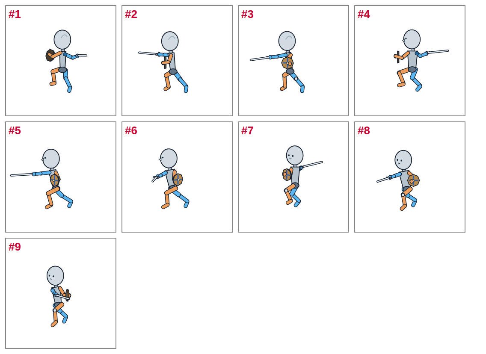
ポーズ一覧を保存

横一文字（右から左への水平斬り）（2/2）：9枚 添付のポーズ一覧の番号どおりに、1枚ずつ別の画像で描いてください。決まりは最初の文のとおりです。 #1 → aria__yoko__up_left__3.png 向き：斜め後ろ（背中が見え、画面の左奥を向く）／12コマのうち4コマ目（溜め） cocked: the blade points straight back #2 → aria__yoko__up_left__6.png 向き：斜め後ろ（背中が見え、画面の左奥を向く）／12コマのうち7コマ目（命中） impact: blade level at her chest, in line with the arm #3 → aria__yoko__up_left__7.png 向き：斜め後ろ（背中が見え、画面の左奥を向く）／12コマのうち8コマ目（振り抜き） carried round to her left #4 → aria__yoko__left__3.png 向き：真横（画面の左を向く横顔）／12コマのうち4コマ目（溜め） cocked: the blade points straight back #5 → aria__yoko__left__6.png 向き：真横（画面の左を向く横顔）／12コマのうち7コマ目（命中） impact: blade level at her chest, in line with the arm #6 → aria__yoko__left__7.png 向き：真横（画面の左を向く横顔）／12コマのうち8コマ目（振り抜き） carried round to her left #7 → aria__yoko__down_left__3.png 向き：斜め前（体の正面が画面の左手前を向く）／12コマのうち4コマ目（溜め） cocked: the blade points straight back #8 → aria__yoko__down_left__6.png 向き：斜め前（体の正面が画面の左手前を向く）／12コマのうち7コマ目（命中） impact: blade level at her chest, in line with the arm #9 → aria__yoko__down_left__7.png 向き：斜め前（体の正面が画面の左手前を向く）／12コマのうち8コマ目（振り抜き） carried round to her left
9. 突き 16枚
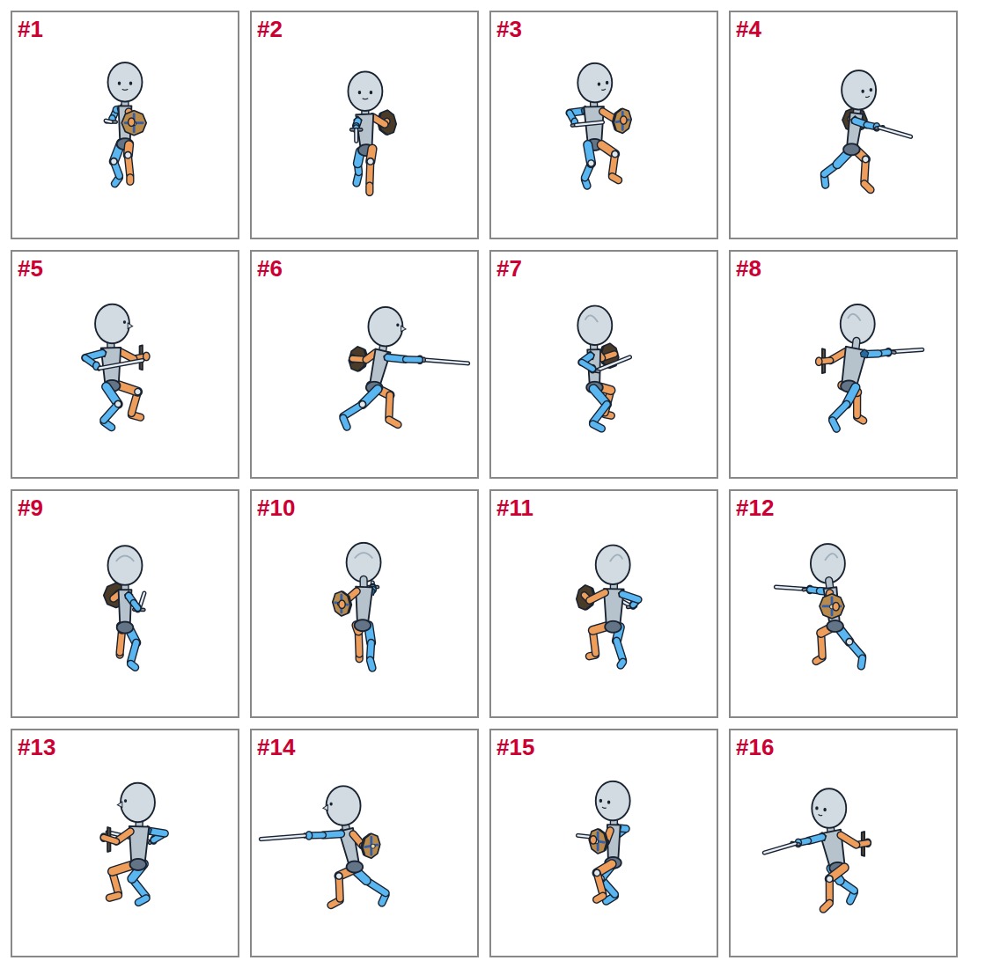
ポーズ一覧を保存

突き：16枚 添付のポーズ一覧の番号どおりに、1枚ずつ別の画像で描いてください。決まりは最初の文のとおりです。 #1 → aria__thrust__front__2.png 向き：正面（こちらを向く）／9コマのうち3コマ目（溜め） coil: weight back, lead foot lifts #2 → aria__thrust__front__4.png 向き：正面（こちらを向く）／9コマのうち5コマ目（命中） full extension: arm and blade one line, rear leg straight, shield arm thrown back #3 → aria__thrust__down_right__2.png 向き：斜め前（体の正面が画面の右手前を向く）／9コマのうち3コマ目（溜め） coil: weight back, lead foot lifts #4 → aria__thrust__down_right__4.png 向き：斜め前（体の正面が画面の右手前を向く）／9コマのうち5コマ目（命中） full extension: arm and blade one line, rear leg straight, shield arm thrown back #5 → aria__thrust__right__2.png 向き：真横（画面の右を向く横顔）／9コマのうち3コマ目（溜め） coil: weight back, lead foot lifts #6 → aria__thrust__right__4.png 向き：真横（画面の右を向く横顔）／9コマのうち5コマ目（命中） full extension: arm and blade one line, rear leg straight, shield arm thrown back #7 → aria__thrust__up_right__2.png 向き：斜め後ろ（背中が見え、画面の右奥を向く）／9コマのうち3コマ目（溜め） coil: weight back, lead foot lifts #8 → aria__thrust__up_right__4.png 向き：斜め後ろ（背中が見え、画面の右奥を向く）／9コマのうち5コマ目（命中） full extension: arm and blade one line, rear leg straight, shield arm thrown back #9 → aria__thrust__back__2.png 向き：後ろ（背中）／9コマのうち3コマ目（溜め） coil: weight back, lead foot lifts #10 → aria__thrust__back__4.png 向き：後ろ（背中）／9コマのうち5コマ目（命中） full extension: arm and blade one line, rear leg straight, shield arm thrown back #11 → aria__thrust__up_left__2.png 向き：斜め後ろ（背中が見え、画面の左奥を向く）／9コマのうち3コマ目（溜め） coil: weight back, lead foot lifts #12 → aria__thrust__up_left__4.png 向き：斜め後ろ（背中が見え、画面の左奥を向く）／9コマのうち5コマ目（命中） full extension: arm and blade one line, rear leg straight, shield arm thrown back #13 → aria__thrust__left__2.png 向き：真横（画面の左を向く横顔）／9コマのうち3コマ目（溜め） coil: weight back, lead foot lifts #14 → aria__thrust__left__4.png 向き：真横（画面の左を向く横顔）／9コマのうち5コマ目（命中） full extension: arm and blade one line, rear leg straight, shield arm thrown back #15 → aria__thrust__down_left__2.png 向き：斜め前（体の正面が画面の左手前を向く）／9コマのうち3コマ目（溜め） coil: weight back, lead foot lifts #16 → aria__thrust__down_left__4.png 向き：斜め前（体の正面が画面の左手前を向く）／9コマのうち5コマ目（命中） full extension: arm and blade one line, rear leg straight, shield arm thrown back
10. 振りかぶったまま止まり、剣を下ろして目をそらす 16枚
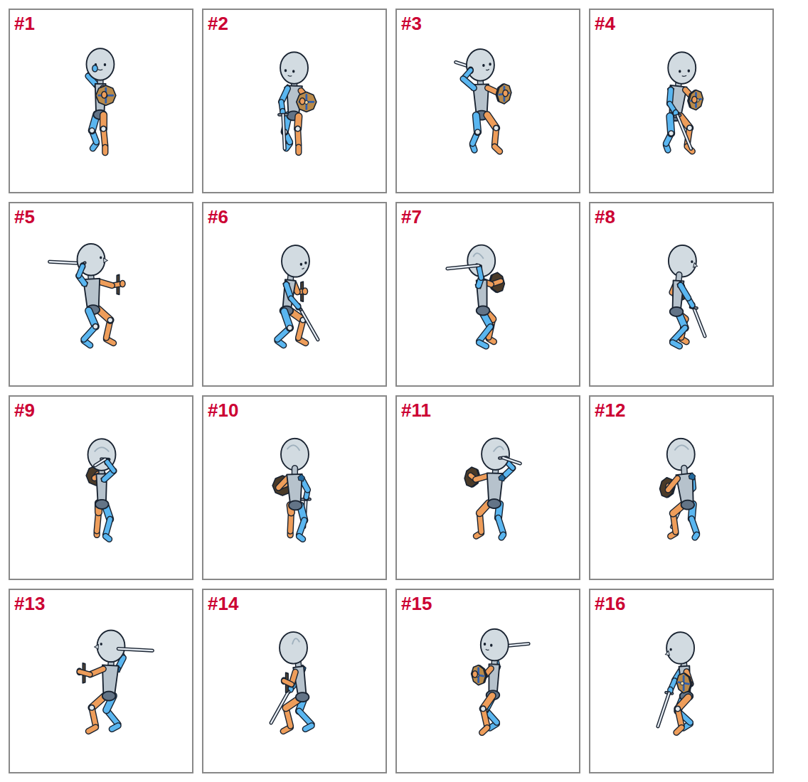
ポーズ一覧を保存

振りかぶったまま止まり、剣を下ろして目をそらす：16枚 添付のポーズ一覧の番号どおりに、1枚ずつ別の画像で描いてください。決まりは最初の文のとおりです。 #1 → aria__swing_abandon__front__3.png 向き：正面（こちらを向く）／7コマのうち4コマ目（止まる） it stops there: held over her head, trembling #2 → aria__swing_abandon__front__5.png 向き：正面（こちらを向く）／7コマのうち6コマ目（目をそらす） point down by her knee; she looks away #3 → aria__swing_abandon__down_right__3.png 向き：斜め前（体の正面が画面の右手前を向く）／7コマのうち4コマ目（止まる） it stops there: held over her head, trembling #4 → aria__swing_abandon__down_right__5.png 向き：斜め前（体の正面が画面の右手前を向く）／7コマのうち6コマ目（目をそらす） point down by her knee; she looks away #5 → aria__swing_abandon__right__3.png 向き：真横（画面の右を向く横顔）／7コマのうち4コマ目（止まる） it stops there: held over her head, trembling #6 → aria__swing_abandon__right__5.png 向き：真横（画面の右を向く横顔）／7コマのうち6コマ目（目をそらす） point down by her knee; she looks away #7 → aria__swing_abandon__up_right__3.png 向き：斜め後ろ（背中が見え、画面の右奥を向く）／7コマのうち4コマ目（止まる） it stops there: held over her head, trembling #8 → aria__swing_abandon__up_right__5.png 向き：斜め後ろ（背中が見え、画面の右奥を向く）／7コマのうち6コマ目（目をそらす） point down by her knee; she looks away #9 → aria__swing_abandon__back__3.png 向き：後ろ（背中）／7コマのうち4コマ目（止まる） it stops there: held over her head, trembling #10 → aria__swing_abandon__back__5.png 向き：後ろ（背中）／7コマのうち6コマ目（目をそらす） point down by her knee; she looks away #11 → aria__swing_abandon__up_left__3.png 向き：斜め後ろ（背中が見え、画面の左奥を向く）／7コマのうち4コマ目（止まる） it stops there: held over her head, trembling #12 → aria__swing_abandon__up_left__5.png 向き：斜め後ろ（背中が見え、画面の左奥を向く）／7コマのうち6コマ目（目をそらす） point down by her knee; she looks away #13 → aria__swing_abandon__left__3.png 向き：真横（画面の左を向く横顔）／7コマのうち4コマ目（止まる） it stops there: held over her head, trembling #14 → aria__swing_abandon__left__5.png 向き：真横（画面の左を向く横顔）／7コマのうち6コマ目（目をそらす） point down by her knee; she looks away #15 → aria__swing_abandon__down_left__3.png 向き：斜め前（体の正面が画面の左手前を向く）／7コマのうち4コマ目（止まる） it stops there: held over her head, trembling #16 → aria__swing_abandon__down_left__5.png 向き：斜め前（体の正面が画面の左手前を向く）／7コマのうち6コマ目（目をそらす） point down by her knee; she looks away
斥候（シーフ） 77コマ・6回
最初に1回だけ送る文（見た目の画像を添付）
添付する画像：scout-source.png（ゲームの8方向の絵）と、必要なら設定画 scout.jpg


これから、2Dゲームのキャラクターのアニメーション用の絵を、何枚かずつまとめてお願いします。 ・添付の画像のキャラクター「斥候」を、同じ絵柄・同じ頭身（小さめのデフォルメ）・同じ衣装と色で描いてください。 ・持ち物と特徴：右手にナイフ。大きなバックパック（上に丸めた寝袋）を背負う。大きな狐の耳と尻尾。 ・毎回、番号つきの「ポーズ一覧」の画像を添付し、番号ごとに向きと動きを書きます。番号1つにつき1枚の別々の画像を描いてください（1枚に並べない）。 ・姿勢・向き・手足と持ち物の位置は、ポーズ一覧の図（マネキン）に合わせてください。図の色の意味：青＝キャラクター本人の右半身、橙＝左半身、灰色＝胴と頭。図の線・色・関節の丸・番号は描かないでください。 ・1枚ごとに正方形（1024×1024）。全身が入るように上下左右に1割くらいの余白をとり、立っているときの足元は、どの絵も画像の下から1割くらいの高さにそろえてください。キャラクターの大きさも、どの絵でもそろえてください。 ・背景は透明（できなければ真っ白の無地）。影・床・効果線・文字・枠は描かないでください。 ・ファイル名は、番号ごとに指定する名前にしてください。できれば全部を1つのZIPにまとめてください。 ・描いた絵を縮小・減色・切り抜きしないでください（描いたままの PNG）。 わかったら「OK」とだけ返してください。
まとめて送る文（そのポーズ一覧を添付）
1. ナイフで素早く二連撃して跳び退く（1/2） 16枚
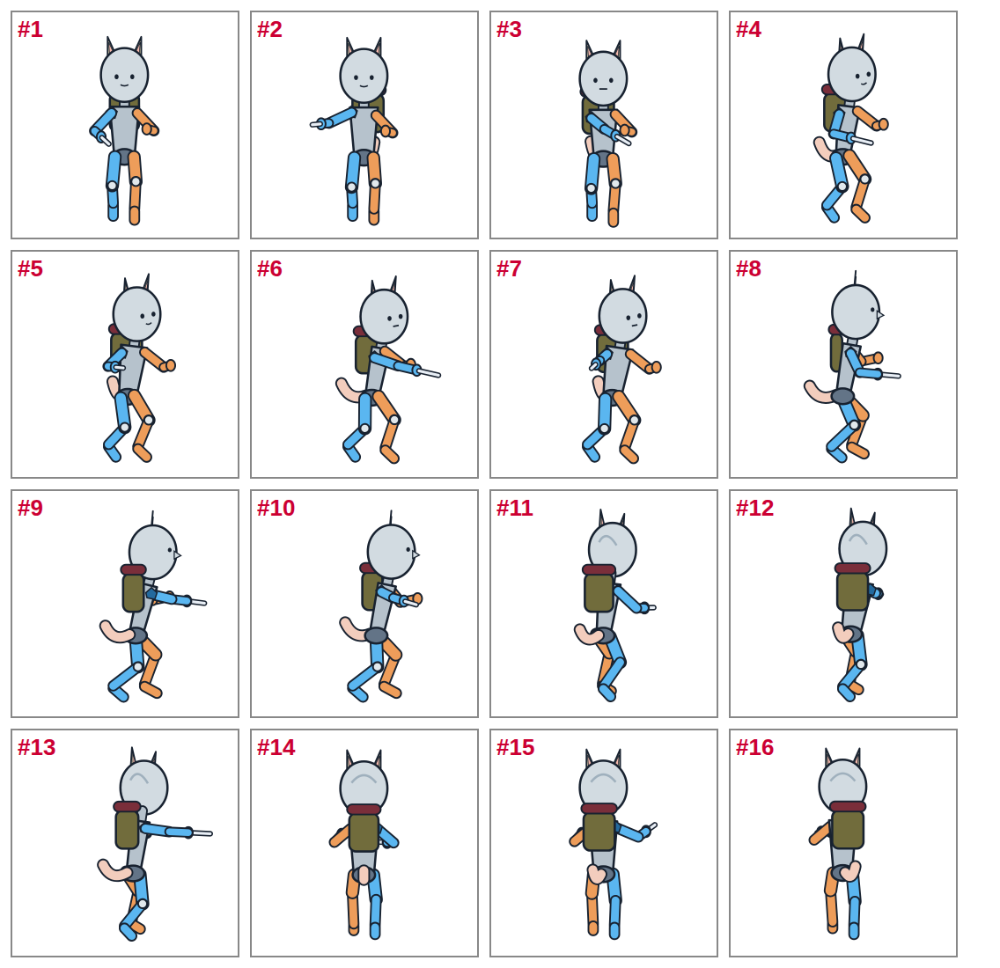
ポーズ一覧を保存

ナイフで素早く二連撃して跳び退く（1/2）：16枚 添付のポーズ一覧の番号どおりに、1枚ずつ別の画像で描いてください。決まりは最初の文のとおりです。 #1 → scout__scout_knife_combo__front__0.png 向き：正面（こちらを向く）／16コマのうち1コマ目（構え） low guard, knife in the right hand #2 → scout__scout_knife_combo__front__2.png 向き：正面（こちらを向く）／16コマのうち3コマ目（引き） the knife hand draws back #3 → scout__scout_knife_combo__front__6.png 向き：正面（こちらを向く）／16コマのうち7コマ目（一閃） steps in: slashes across to her left #4 → scout__scout_knife_combo__down_right__0.png 向き：斜め前（体の正面が画面の右手前を向く）／16コマのうち1コマ目（構え） low guard, knife in the right hand #5 → scout__scout_knife_combo__down_right__2.png 向き：斜め前（体の正面が画面の右手前を向く）／16コマのうち3コマ目（引き） the knife hand draws back #6 → scout__scout_knife_combo__down_right__6.png 向き：斜め前（体の正面が画面の右手前を向く）／16コマのうち7コマ目（一閃） steps in: slashes across to her left #7 → scout__scout_knife_combo__down_right__11.png 向き：斜め前（体の正面が画面の右手前を向く）／16コマのうち12コマ目（返し） the backhand cut to her right #8 → scout__scout_knife_combo__right__0.png 向き：真横（画面の右を向く横顔）／16コマのうち1コマ目（構え） low guard, knife in the right hand #9 → scout__scout_knife_combo__right__6.png 向き：真横（画面の右を向く横顔）／16コマのうち7コマ目（一閃） steps in: slashes across to her left #10 → scout__scout_knife_combo__right__11.png 向き：真横（画面の右を向く横顔）／16コマのうち12コマ目（返し） the backhand cut to her right #11 → scout__scout_knife_combo__up_right__0.png 向き：斜め後ろ（背中が見え、画面の右奥を向く）／16コマのうち1コマ目（構え） low guard, knife in the right hand #12 → scout__scout_knife_combo__up_right__6.png 向き：斜め後ろ（背中が見え、画面の右奥を向く）／16コマのうち7コマ目（一閃） steps in: slashes across to her left #13 → scout__scout_knife_combo__up_right__11.png 向き：斜め後ろ（背中が見え、画面の右奥を向く）／16コマのうち12コマ目（返し） the backhand cut to her right #14 → scout__scout_knife_combo__back__0.png 向き：後ろ（背中）／16コマのうち1コマ目（構え） low guard, knife in the right hand #15 → scout__scout_knife_combo__back__2.png 向き：後ろ（背中）／16コマのうち3コマ目（引き） the knife hand draws back #16 → scout__scout_knife_combo__back__6.png 向き：後ろ（背中）／16コマのうち7コマ目（一閃） steps in: slashes across to her left
2. ナイフで素早く二連撃して跳び退く（2/2） 11枚
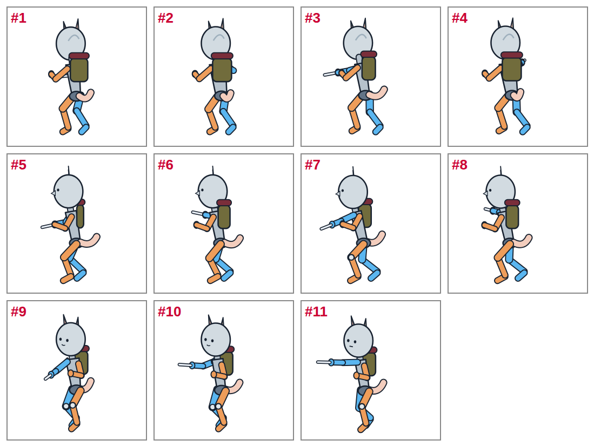
ポーズ一覧を保存

ナイフで素早く二連撃して跳び退く（2/2）：11枚 添付のポーズ一覧の番号どおりに、1枚ずつ別の画像で描いてください。決まりは最初の文のとおりです。 #1 → scout__scout_knife_combo__up_left__0.png 向き：斜め後ろ（背中が見え、画面の左奥を向く）／16コマのうち1コマ目（構え） low guard, knife in the right hand #2 → scout__scout_knife_combo__up_left__2.png 向き：斜め後ろ（背中が見え、画面の左奥を向く）／16コマのうち3コマ目（引き） the knife hand draws back #3 → scout__scout_knife_combo__up_left__6.png 向き：斜め後ろ（背中が見え、画面の左奥を向く）／16コマのうち7コマ目（一閃） steps in: slashes across to her left #4 → scout__scout_knife_combo__up_left__11.png 向き：斜め後ろ（背中が見え、画面の左奥を向く）／16コマのうち12コマ目（返し） the backhand cut to her right #5 → scout__scout_knife_combo__left__0.png 向き：真横（画面の左を向く横顔）／16コマのうち1コマ目（構え） low guard, knife in the right hand #6 → scout__scout_knife_combo__left__2.png 向き：真横（画面の左を向く横顔）／16コマのうち3コマ目（引き） the knife hand draws back #7 → scout__scout_knife_combo__left__6.png 向き：真横（画面の左を向く横顔）／16コマのうち7コマ目（一閃） steps in: slashes across to her left #8 → scout__scout_knife_combo__left__11.png 向き：真横（画面の左を向く横顔）／16コマのうち12コマ目（返し） the backhand cut to her right #9 → scout__scout_knife_combo__down_left__0.png 向き：斜め前（体の正面が画面の左手前を向く）／16コマのうち1コマ目（構え） low guard, knife in the right hand #10 → scout__scout_knife_combo__down_left__2.png 向き：斜め前（体の正面が画面の左手前を向く）／16コマのうち3コマ目（引き） the knife hand draws back #11 → scout__scout_knife_combo__down_left__11.png 向き：斜め前（体の正面が画面の左手前を向く）／16コマのうち12コマ目（返し） the backhand cut to her right
3. ナイフを投げる（1/2） 15枚
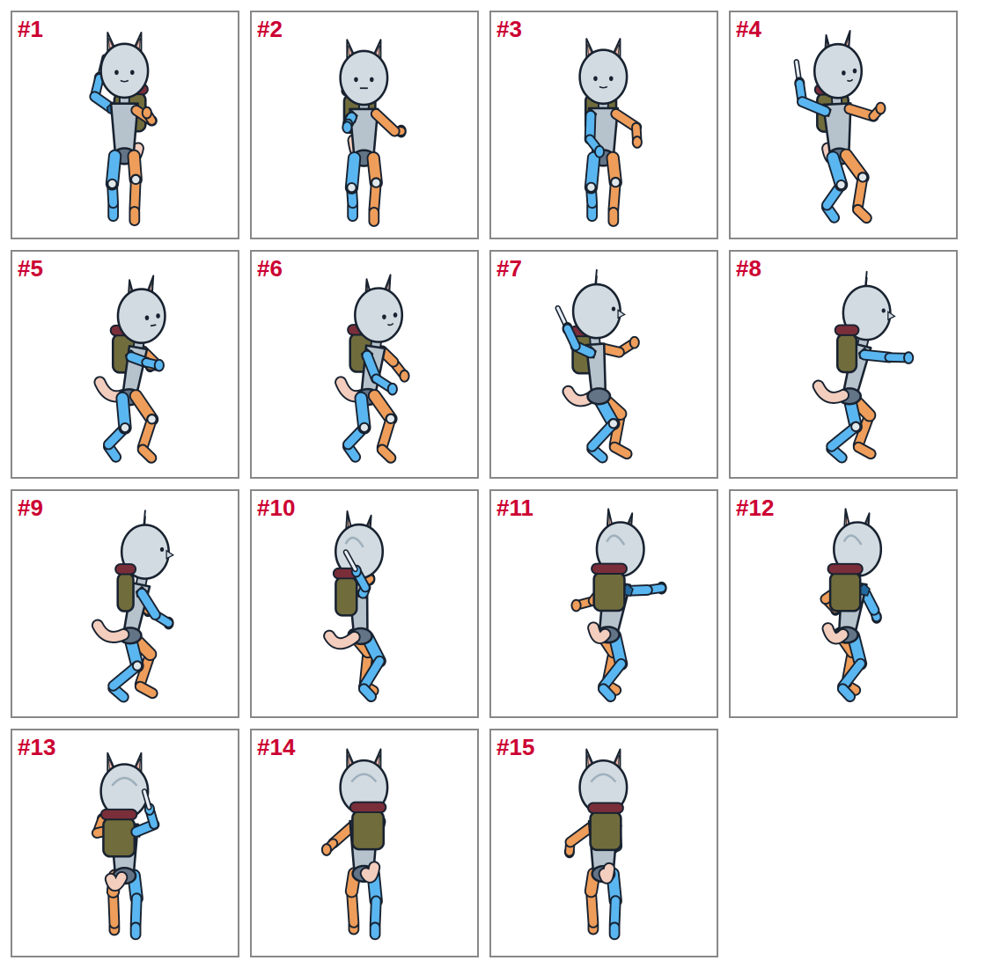
ポーズ一覧を保存

ナイフを投げる（1/2）：15枚 添付のポーズ一覧の番号どおりに、1枚ずつ別の画像で描いてください。決まりは最初の文のとおりです。 #1 → scout__scout_throw__front__6.png 向き：正面（こちらを向く）／19コマのうち7コマ目（振りかぶり） the knife back behind her head, the other hand aims #2 → scout__scout_throw__front__13.png 向き：正面（こちらを向く）／19コマのうち14コマ目（投げる） the throw: arm straight out, the knife gone #3 → scout__scout_throw__front__16.png 向き：正面（こちらを向く）／19コマのうち17コマ目（振り抜き） follow-through #4 → scout__scout_throw__down_right__6.png 向き：斜め前（体の正面が画面の右手前を向く）／19コマのうち7コマ目（振りかぶり） the knife back behind her head, the other hand aims #5 → scout__scout_throw__down_right__13.png 向き：斜め前（体の正面が画面の右手前を向く）／19コマのうち14コマ目（投げる） the throw: arm straight out, the knife gone #6 → scout__scout_throw__down_right__16.png 向き：斜め前（体の正面が画面の右手前を向く）／19コマのうち17コマ目（振り抜き） follow-through #7 → scout__scout_throw__right__6.png 向き：真横（画面の右を向く横顔）／19コマのうち7コマ目（振りかぶり） the knife back behind her head, the other hand aims #8 → scout__scout_throw__right__13.png 向き：真横（画面の右を向く横顔）／19コマのうち14コマ目（投げる） the throw: arm straight out, the knife gone #9 → scout__scout_throw__right__16.png 向き：真横（画面の右を向く横顔）／19コマのうち17コマ目（振り抜き） follow-through #10 → scout__scout_throw__up_right__6.png 向き：斜め後ろ（背中が見え、画面の右奥を向く）／19コマのうち7コマ目（振りかぶり） the knife back behind her head, the other hand aims #11 → scout__scout_throw__up_right__13.png 向き：斜め後ろ（背中が見え、画面の右奥を向く）／19コマのうち14コマ目（投げる） the throw: arm straight out, the knife gone #12 → scout__scout_throw__up_right__16.png 向き：斜め後ろ（背中が見え、画面の右奥を向く）／19コマのうち17コマ目（振り抜き） follow-through #13 → scout__scout_throw__back__6.png 向き：後ろ（背中）／19コマのうち7コマ目（振りかぶり） the knife back behind her head, the other hand aims #14 → scout__scout_throw__back__13.png 向き：後ろ（背中）／19コマのうち14コマ目（投げる） the throw: arm straight out, the knife gone #15 → scout__scout_throw__back__16.png 向き：後ろ（背中）／19コマのうち17コマ目（振り抜き） follow-through
4. ナイフを投げる（2/2） 9枚
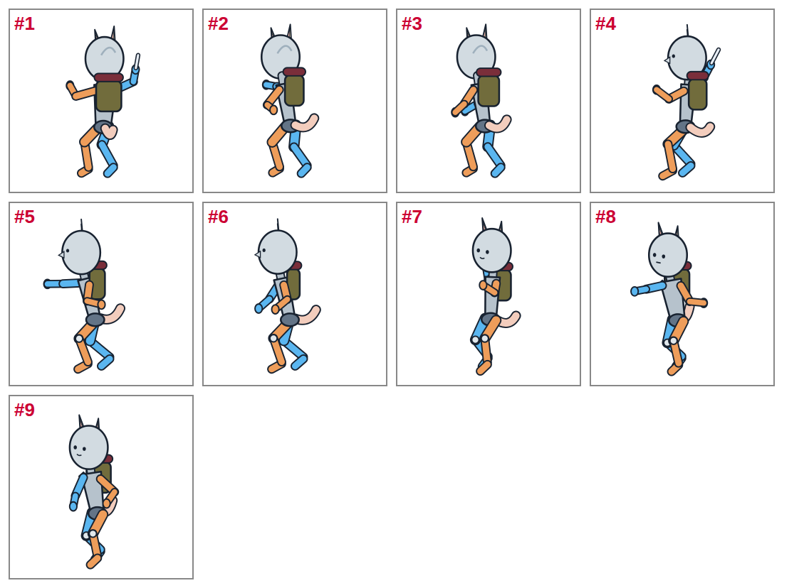
ポーズ一覧を保存

ナイフを投げる（2/2）：9枚 添付のポーズ一覧の番号どおりに、1枚ずつ別の画像で描いてください。決まりは最初の文のとおりです。 #1 → scout__scout_throw__up_left__6.png 向き：斜め後ろ（背中が見え、画面の左奥を向く）／19コマのうち7コマ目（振りかぶり） the knife back behind her head, the other hand aims #2 → scout__scout_throw__up_left__13.png 向き：斜め後ろ（背中が見え、画面の左奥を向く）／19コマのうち14コマ目（投げる） the throw: arm straight out, the knife gone #3 → scout__scout_throw__up_left__16.png 向き：斜め後ろ（背中が見え、画面の左奥を向く）／19コマのうち17コマ目（振り抜き） follow-through #4 → scout__scout_throw__left__6.png 向き：真横（画面の左を向く横顔）／19コマのうち7コマ目（振りかぶり） the knife back behind her head, the other hand aims #5 → scout__scout_throw__left__13.png 向き：真横（画面の左を向く横顔）／19コマのうち14コマ目（投げる） the throw: arm straight out, the knife gone #6 → scout__scout_throw__left__16.png 向き：真横（画面の左を向く横顔）／19コマのうち17コマ目（振り抜き） follow-through #7 → scout__scout_throw__down_left__6.png 向き：斜め前（体の正面が画面の左手前を向く）／19コマのうち7コマ目（振りかぶり） the knife back behind her head, the other hand aims #8 → scout__scout_throw__down_left__13.png 向き：斜め前（体の正面が画面の左手前を向く）／19コマのうち14コマ目（投げる） the throw: arm straight out, the knife gone #9 → scout__scout_throw__down_left__16.png 向き：斜め前（体の正面が画面の左手前を向く）／19コマのうち17コマ目（振り抜き） follow-through
5. 低く横へ跳んで身をかわす 13枚
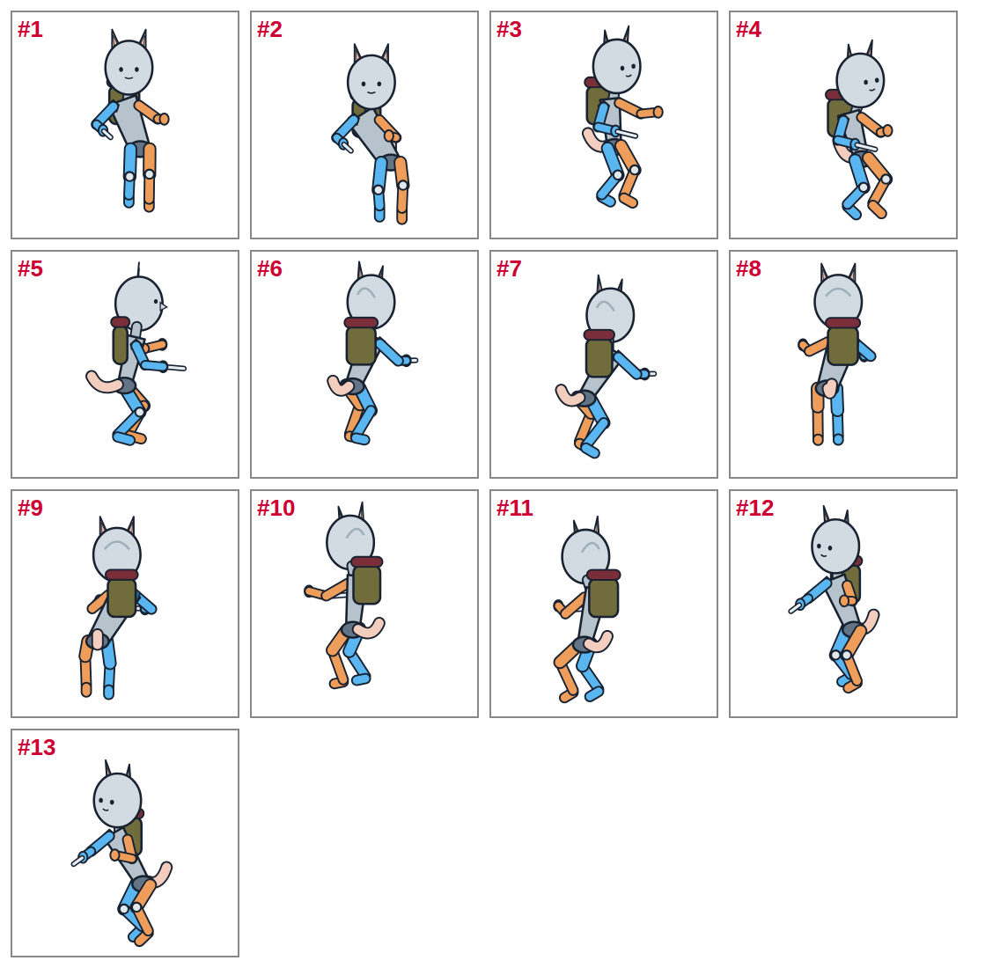
ポーズ一覧を保存

低く横へ跳んで身をかわす：13枚 添付のポーズ一覧の番号どおりに、1枚ずつ別の画像で描いてください。決まりは最初の文のとおりです。 #1 → scout__scout_sidestep__front__3.png 向き：正面（こちらを向く）／8コマのうち4コマ目（跳ぶ） springs sideways, low #2 → scout__scout_sidestep__front__5.png 向き：正面（こちらを向く）／8コマのうち6コマ目（着地） lands low, the knife still up #3 → scout__scout_sidestep__down_right__3.png 向き：斜め前（体の正面が画面の右手前を向く）／8コマのうち4コマ目（跳ぶ） springs sideways, low #4 → scout__scout_sidestep__down_right__5.png 向き：斜め前（体の正面が画面の右手前を向く）／8コマのうち6コマ目（着地） lands low, the knife still up #5 → scout__scout_sidestep__right__3.png 向き：真横（画面の右を向く横顔）／8コマのうち4コマ目（跳ぶ） springs sideways, low #6 → scout__scout_sidestep__up_right__3.png 向き：斜め後ろ（背中が見え、画面の右奥を向く）／8コマのうち4コマ目（跳ぶ） springs sideways, low #7 → scout__scout_sidestep__up_right__5.png 向き：斜め後ろ（背中が見え、画面の右奥を向く）／8コマのうち6コマ目（着地） lands low, the knife still up #8 → scout__scout_sidestep__back__3.png 向き：後ろ（背中）／8コマのうち4コマ目（跳ぶ） springs sideways, low #9 → scout__scout_sidestep__back__5.png 向き：後ろ（背中）／8コマのうち6コマ目（着地） lands low, the knife still up #10 → scout__scout_sidestep__up_left__3.png 向き：斜め後ろ（背中が見え、画面の左奥を向く）／8コマのうち4コマ目（跳ぶ） springs sideways, low #11 → scout__scout_sidestep__up_left__5.png 向き：斜め後ろ（背中が見え、画面の左奥を向く）／8コマのうち6コマ目（着地） lands low, the knife still up #12 → scout__scout_sidestep__down_left__3.png 向き：斜め前（体の正面が画面の左手前を向く）／8コマのうち4コマ目（跳ぶ） springs sideways, low #13 → scout__scout_sidestep__down_left__5.png 向き：斜め前（体の正面が画面の左手前を向く）／8コマのうち6コマ目（着地） lands low, the knife still up
6. 気配を察知して身を低くし、辺りをうかがう／片膝をついて罠を外す／背中のバックパックから品物を出して見せる（商人）／身を低くして駆け込み、足を滑らせて止まる／バックパックの肩ひもを引き上げて背負い直す（待機の仕草） 13枚
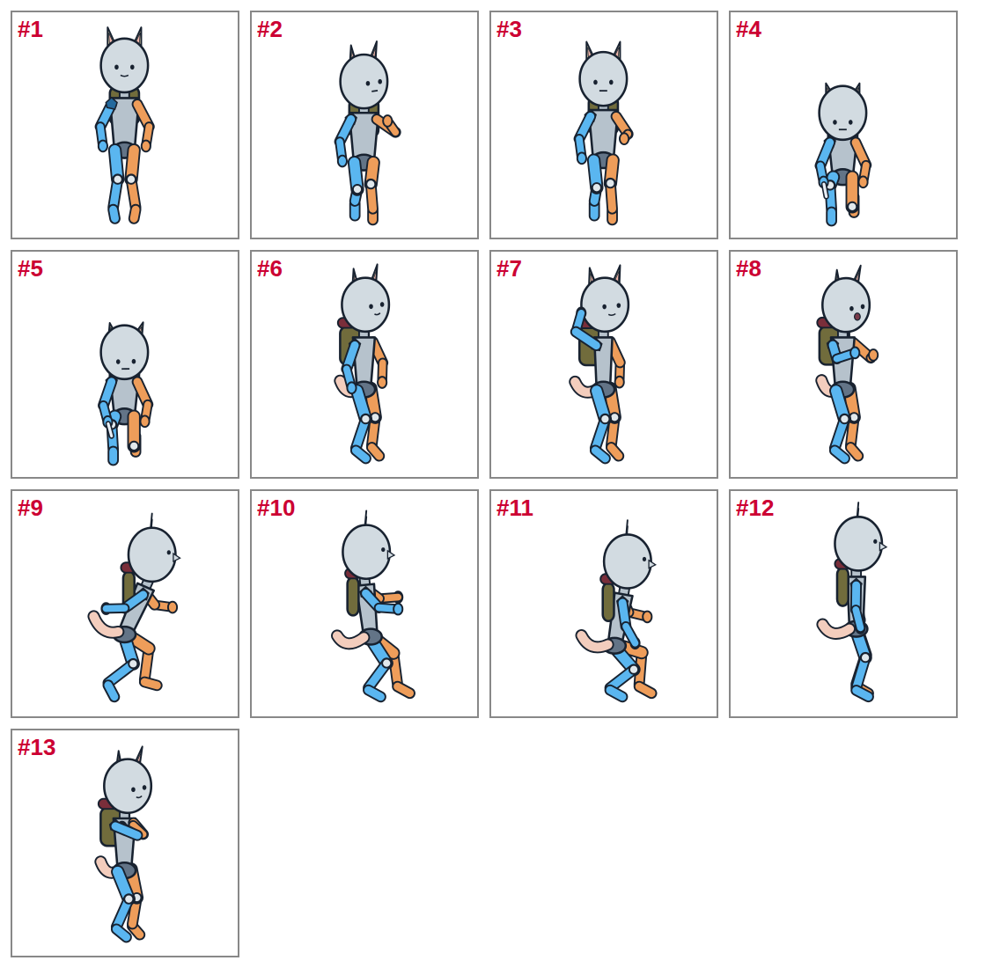
ポーズ一覧を保存

気配を察知して身を低くし、辺りをうかがう／片膝をついて罠を外す／背中のバックパックから品物を出して見せる（商人）／身を低くして駆け込み、足を滑らせて止まる／バックパックの肩ひもを引き上げて背負い直す（待機の仕草）：13枚 添付のポーズ一覧の番号どおりに、1枚ずつ別の画像で描いてください。決まりは最初の文のとおりです。 #1 → scout__scout_sense__front__0.png 気配を察知して身を低くし、辺りをうかがう／向き：正面（こちらを向く）／12コマのうち1コマ目（立つ） standing #2 → scout__scout_sense__front__4.png 気配を察知して身を低くし、辺りをうかがう／向き：正面（こちらを向く）／12コマのうち5コマ目（うかがう） drops low - feet close, one ahead, knees forward, the back heel up - a hand up (wait); looks one way #3 → scout__scout_sense__front__8.png 気配を察知して身を低くし、辺りをうかがう／向き：正面（こちらを向く）／12コマのうち9コマ目（指す） points to where it is #4 → scout__scout_disarm__front__0.png 片膝をついて罠を外す／向き：正面（こちらを向く）／8コマのうち1コマ目 on one knee at the trap, both hands working at it close to the floor, the tail swaying #5 → scout__scout_disarm__front__2.png 片膝をついて罠を外す／向き：正面（こちらを向く）／8コマのうち3コマ目 on one knee at the trap, both hands working at it close to the floor, the tail swaying #6 → scout__scout_rummage__down_right__0.png 背中のバックパックから品物を出して見せる（商人）／向き：斜め前（体の正面が画面の右手前を向く）／16コマのうち1コマ目（立つ） #7 → scout__scout_rummage__down_right__5.png 背中のバックパックから品物を出して見せる（商人）／向き：斜め前（体の正面が画面の右手前を向く）／16コマのうち6コマ目（探る） reaches back over her shoulder into the pack #8 → scout__scout_rummage__down_right__11.png 背中のバックパックから品物を出して見せる（商人）／向き：斜め前（体の正面が画面の右手前を向く）／16コマのうち12コマ目（見せる） holds it out to show it, a small smile #9 → scout__scout_dash_stop__right__0.png 身を低くして駆け込み、足を滑らせて止まる／向き：真横（画面の右を向く横顔）／10コマのうち1コマ目（駆ける） a long low stride #10 → scout__scout_dash_stop__right__4.png 身を低くして駆け込み、足を滑らせて止まる／向き：真横（画面の右を向く横顔）／10コマのうち5コマ目（滑る） the lead foot plants and slides, body leaning back #11 → scout__scout_dash_stop__right__7.png 身を低くして駆け込み、足を滑らせて止まる／向き：真横（画面の右を向く横顔）／10コマのうち8コマ目（止まる） stops low, one hand near the floor #12 → scout__scout_dash_stop__right__9.png 身を低くして駆け込み、足を滑らせて止まる／向き：真横（画面の右を向く横顔）／10コマのうち10コマ目（立つ） standing, feet together under her #13 → scout__scout_pack_adjust__down_right__3.png バックパックの肩ひもを引き上げて背負い直す（待機の仕草）／向き：斜め前（体の正面が画面の右手前を向く）／11コマのうち4コマ目（つかむ） hands on both straps
魔法使い 55コマ・4回
最初に1回だけ送る文（見た目の画像を添付）
添付する画像：witch-source.png（ゲームの8方向の絵）と、必要なら設定画 witch-reference.jpg


これから、2Dゲームのキャラクターのアニメーション用の絵を、何枚かずつまとめてお願いします。 ・添付の画像のキャラクター「魔法使い」を、同じ絵柄・同じ頭身（小さめのデフォルメ）・同じ衣装と色で描いてください。 ・持ち物と特徴：右手に紫の宝珠の杖。両腕の肘から先は金属の義腕。大きなとんがり帽子。 ・毎回、番号つきの「ポーズ一覧」の画像を添付し、番号ごとに向きと動きを書きます。番号1つにつき1枚の別々の画像を描いてください（1枚に並べない）。 ・姿勢・向き・手足と持ち物の位置は、ポーズ一覧の図（マネキン）に合わせてください。図の色の意味：青＝キャラクター本人の右半身、橙＝左半身、灰色＝胴と頭。図の線・色・関節の丸・番号は描かないでください。 ・1枚ごとに正方形（1024×1024）。全身が入るように上下左右に1割くらいの余白をとり、立っているときの足元は、どの絵も画像の下から1割くらいの高さにそろえてください。キャラクターの大きさも、どの絵でもそろえてください。 ・背景は透明（できなければ真っ白の無地）。影・床・効果線・文字・枠は描かないでください。 ・ファイル名は、番号ごとに指定する名前にしてください。できれば全部を1つのZIPにまとめてください。 ・描いた絵を縮小・減色・切り抜きしないでください（描いたままの PNG）。 わかったら「OK」とだけ返してください。
まとめて送る文（そのポーズ一覧を添付）
1. 機械の腕を向けて魔力の弾を放つ（1/2） 15枚
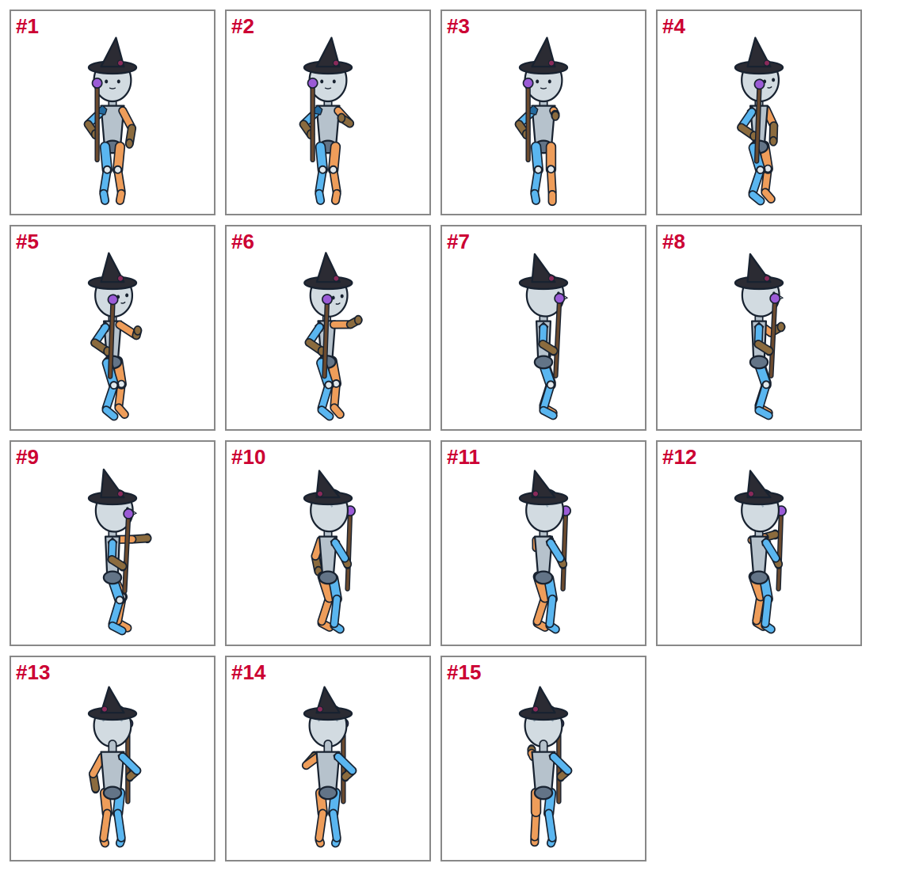
ポーズ一覧を保存

機械の腕を向けて魔力の弾を放つ（1/2）：15枚 添付のポーズ一覧の番号どおりに、1枚ずつ別の画像で描いてください。決まりは最初の文のとおりです。 #1 → mage__mage_bolt__front__0.png 向き：正面（こちらを向く）／12コマのうち1コマ目（立つ） the staff upright in the right hand #2 → mage__mage_bolt__front__3.png 向き：正面（こちらを向く）／12コマのうち4コマ目（集める） the mechanical left arm comes up bent, gathering #3 → mage__mage_bolt__front__5.png 向き：正面（こちらを向く）／12コマのうち6コマ目（狙う） the arm straight at the target #4 → mage__mage_bolt__down_right__0.png 向き：斜め前（体の正面が画面の右手前を向く）／12コマのうち1コマ目（立つ） the staff upright in the right hand #5 → mage__mage_bolt__down_right__3.png 向き：斜め前（体の正面が画面の右手前を向く）／12コマのうち4コマ目（集める） the mechanical left arm comes up bent, gathering #6 → mage__mage_bolt__down_right__6.png 向き：斜め前（体の正面が画面の右手前を向く）／12コマのうち7コマ目（放つ） the shot: the arm kicks up #7 → mage__mage_bolt__right__0.png 向き：真横（画面の右を向く横顔）／12コマのうち1コマ目（立つ） the staff upright in the right hand #8 → mage__mage_bolt__right__3.png 向き：真横（画面の右を向く横顔）／12コマのうち4コマ目（集める） the mechanical left arm comes up bent, gathering #9 → mage__mage_bolt__right__5.png 向き：真横（画面の右を向く横顔）／12コマのうち6コマ目（狙う） the arm straight at the target #10 → mage__mage_bolt__up_right__0.png 向き：斜め後ろ（背中が見え、画面の右奥を向く）／12コマのうち1コマ目（立つ） the staff upright in the right hand #11 → mage__mage_bolt__up_right__3.png 向き：斜め後ろ（背中が見え、画面の右奥を向く）／12コマのうち4コマ目（集める） the mechanical left arm comes up bent, gathering #12 → mage__mage_bolt__up_right__5.png 向き：斜め後ろ（背中が見え、画面の右奥を向く）／12コマのうち6コマ目（狙う） the arm straight at the target #13 → mage__mage_bolt__back__0.png 向き：後ろ（背中）／12コマのうち1コマ目（立つ） the staff upright in the right hand #14 → mage__mage_bolt__back__3.png 向き：後ろ（背中）／12コマのうち4コマ目（集める） the mechanical left arm comes up bent, gathering #15 → mage__mage_bolt__back__5.png 向き：後ろ（背中）／12コマのうち6コマ目（狙う） the arm straight at the target
2. 機械の腕を向けて魔力の弾を放つ（2/2） 9枚
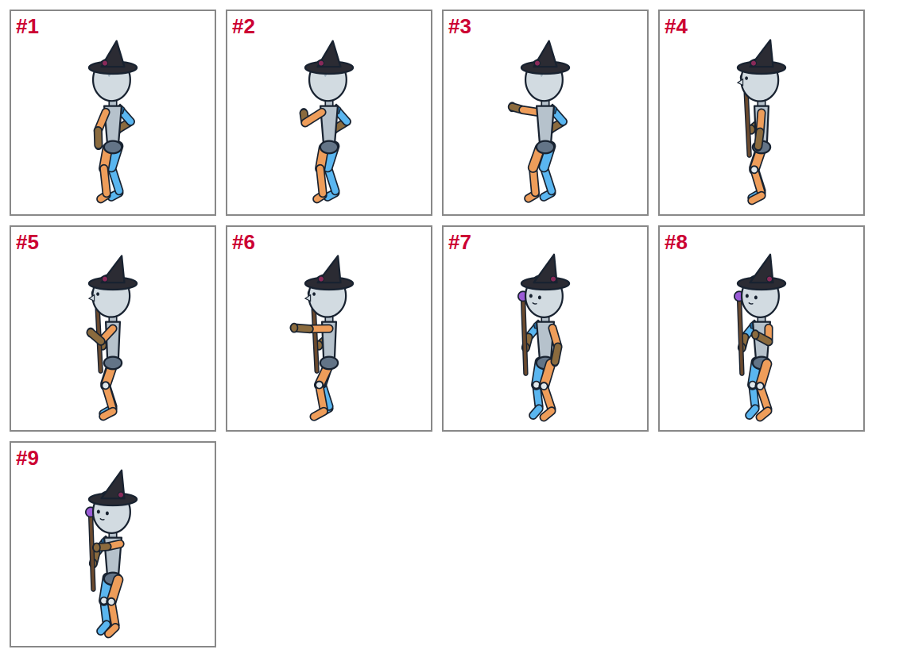
ポーズ一覧を保存

機械の腕を向けて魔力の弾を放つ（2/2）：9枚 添付のポーズ一覧の番号どおりに、1枚ずつ別の画像で描いてください。決まりは最初の文のとおりです。 #1 → mage__mage_bolt__up_left__0.png 向き：斜め後ろ（背中が見え、画面の左奥を向く）／12コマのうち1コマ目（立つ） the staff upright in the right hand #2 → mage__mage_bolt__up_left__3.png 向き：斜め後ろ（背中が見え、画面の左奥を向く）／12コマのうち4コマ目（集める） the mechanical left arm comes up bent, gathering #3 → mage__mage_bolt__up_left__5.png 向き：斜め後ろ（背中が見え、画面の左奥を向く）／12コマのうち6コマ目（狙う） the arm straight at the target #4 → mage__mage_bolt__left__0.png 向き：真横（画面の左を向く横顔）／12コマのうち1コマ目（立つ） the staff upright in the right hand #5 → mage__mage_bolt__left__3.png 向き：真横（画面の左を向く横顔）／12コマのうち4コマ目（集める） the mechanical left arm comes up bent, gathering #6 → mage__mage_bolt__left__5.png 向き：真横（画面の左を向く横顔）／12コマのうち6コマ目（狙う） the arm straight at the target #7 → mage__mage_bolt__down_left__0.png 向き：斜め前（体の正面が画面の左手前を向く）／12コマのうち1コマ目（立つ） the staff upright in the right hand #8 → mage__mage_bolt__down_left__3.png 向き：斜め前（体の正面が画面の左手前を向く）／12コマのうち4コマ目（集める） the mechanical left arm comes up bent, gathering #9 → mage__mage_bolt__down_left__5.png 向き：斜め前（体の正面が画面の左手前を向く）／12コマのうち6コマ目（狙う） the arm straight at the target
3. 杖と腕を掲げて溜め、振り下ろして範囲魔法 16枚

ポーズ一覧を保存
杖と腕を掲げて溜め、振り下ろして範囲魔法：16枚 添付のポーズ一覧の番号どおりに、1枚ずつ別の画像で描いてください。決まりは最初の文のとおりです。 #1 → mage__mage_area__front__5.png 向き：正面（こちらを向く）／18コマのうち6コマ目（掲げる） the staff and the left arm raised high #2 → mage__mage_area__front__13.png 向き：正面（こちらを向く）／18コマのうち14コマ目（振り下ろす） the staff comes down to the floor ahead, the arm sweeps out #3 → mage__mage_area__down_right__5.png 向き：斜め前（体の正面が画面の右手前を向く）／18コマのうち6コマ目（掲げる） the staff and the left arm raised high #4 → mage__mage_area__down_right__13.png 向き：斜め前（体の正面が画面の右手前を向く）／18コマのうち14コマ目（振り下ろす） the staff comes down to the floor ahead, the arm sweeps out #5 → mage__mage_area__right__5.png 向き：真横（画面の右を向く横顔）／18コマのうち6コマ目（掲げる） the staff and the left arm raised high #6 → mage__mage_area__right__13.png 向き：真横（画面の右を向く横顔）／18コマのうち14コマ目（振り下ろす） the staff comes down to the floor ahead, the arm sweeps out #7 → mage__mage_area__up_right__5.png 向き：斜め後ろ（背中が見え、画面の右奥を向く）／18コマのうち6コマ目（掲げる） the staff and the left arm raised high #8 → mage__mage_area__up_right__13.png 向き：斜め後ろ（背中が見え、画面の右奥を向く）／18コマのうち14コマ目（振り下ろす） the staff comes down to the floor ahead, the arm sweeps out #9 → mage__mage_area__back__5.png 向き：後ろ（背中）／18コマのうち6コマ目（掲げる） the staff and the left arm raised high #10 → mage__mage_area__back__13.png 向き：後ろ（背中）／18コマのうち14コマ目（振り下ろす） the staff comes down to the floor ahead, the arm sweeps out #11 → mage__mage_area__up_left__5.png 向き：斜め後ろ（背中が見え、画面の左奥を向く）／18コマのうち6コマ目（掲げる） the staff and the left arm raised high #12 → mage__mage_area__up_left__13.png 向き：斜め後ろ（背中が見え、画面の左奥を向く）／18コマのうち14コマ目（振り下ろす） the staff comes down to the floor ahead, the arm sweeps out #13 → mage__mage_area__left__5.png 向き：真横（画面の左を向く横顔）／18コマのうち6コマ目（掲げる） the staff and the left arm raised high #14 → mage__mage_area__left__13.png 向き：真横（画面の左を向く横顔）／18コマのうち14コマ目（振り下ろす） the staff comes down to the floor ahead, the arm sweeps out #15 → mage__mage_area__down_left__5.png 向き：斜め前（体の正面が画面の左手前を向く）／18コマのうち6コマ目（掲げる） the staff and the left arm raised high #16 → mage__mage_area__down_left__13.png 向き：斜め前（体の正面が画面の左手前を向く）／18コマのうち14コマ目（振り下ろす） the staff comes down to the floor ahead, the arm sweeps out
4. 腕を向けたまま魔力を流し続ける／義腕の手のひらを向けて障壁を張る／撃ちすぎて熱をもった義腕を振って冷ます／帽子のつばを引き下げて顔を隠す（照れ・気まずさ）／片膝から杖を支えに立ち上がり、何事もなかった顔をする 15枚
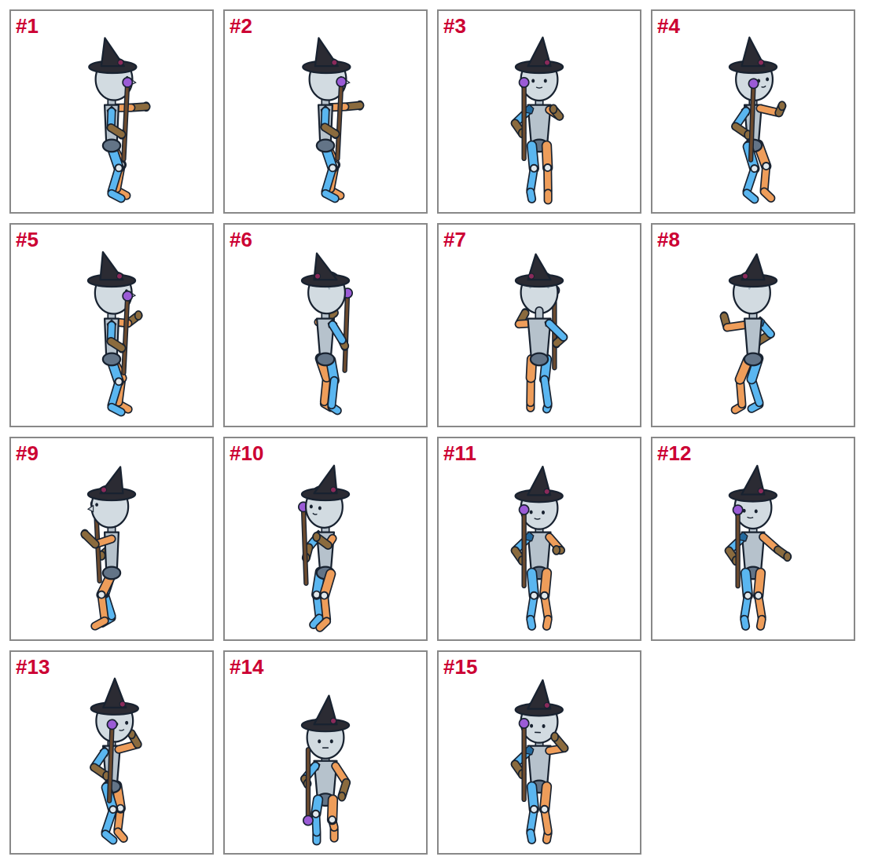
ポーズ一覧を保存

腕を向けたまま魔力を流し続ける／義腕の手のひらを向けて障壁を張る／撃ちすぎて熱をもった義腕を振って冷ます／帽子のつばを引き下げて顔を隠す（照れ・気まずさ）／片膝から杖を支えに立ち上がり、何事もなかった顔をする：15枚 添付のポーズ一覧の番号どおりに、1枚ずつ別の画像で描いてください。決まりは最初の文のとおりです。 #1 → mage__mage_channel__right__0.png 腕を向けたまま魔力を流し続ける／向き：真横（画面の右を向く横顔）／8コマのうち1コマ目 the arm held out, a slight tremble as the power runs through it; the coat stirs #2 → mage__mage_channel__right__3.png 腕を向けたまま魔力を流し続ける／向き：真横（画面の右を向く横顔）／8コマのうち4コマ目 the arm held out, a slight tremble as the power runs through it; the coat stirs #3 → mage__mage_barrier__front__4.png 義腕の手のひらを向けて障壁を張る／向き：正面（こちらを向く）／10コマのうち5コマ目（かざす） the mechanical palm comes up toward the threat #4 → mage__mage_barrier__down_right__4.png 義腕の手のひらを向けて障壁を張る／向き：斜め前（体の正面が画面の右手前を向く）／10コマのうち5コマ目（かざす） the mechanical palm comes up toward the threat #5 → mage__mage_barrier__right__4.png 義腕の手のひらを向けて障壁を張る／向き：真横（画面の右を向く横顔）／10コマのうち5コマ目（かざす） the mechanical palm comes up toward the threat #6 → mage__mage_barrier__up_right__4.png 義腕の手のひらを向けて障壁を張る／向き：斜め後ろ（背中が見え、画面の右奥を向く）／10コマのうち5コマ目（かざす） the mechanical palm comes up toward the threat #7 → mage__mage_barrier__back__4.png 義腕の手のひらを向けて障壁を張る／向き：後ろ（背中）／10コマのうち5コマ目（かざす） the mechanical palm comes up toward the threat #8 → mage__mage_barrier__up_left__4.png 義腕の手のひらを向けて障壁を張る／向き：斜め後ろ（背中が見え、画面の左奥を向く）／10コマのうち5コマ目（かざす） the mechanical palm comes up toward the threat #9 → mage__mage_barrier__left__4.png 義腕の手のひらを向けて障壁を張る／向き：真横（画面の左を向く横顔）／10コマのうち5コマ目（かざす） the mechanical palm comes up toward the threat #10 → mage__mage_barrier__down_left__4.png 義腕の手のひらを向けて障壁を張る／向き：斜め前（体の正面が画面の左手前を向く）／10コマのうち5コマ目（かざす） the mechanical palm comes up toward the threat #11 → mage__mage_overheat__front__0.png 撃ちすぎて熱をもった義腕を振って冷ます／向き：正面（こちらを向く）／12コマのうち1コマ目（見る） looks at the hot arm, steam venting from it #12 → mage__mage_overheat__front__2.png 撃ちすぎて熱をもった義腕を振って冷ます／向き：正面（こちらを向く）／12コマのうち3コマ目（振る） shakes it out to the side #13 → mage__mage_hat_tug__down_right__5.png 帽子のつばを引き下げて顔を隠す（照れ・気まずさ）／向き：斜め前（体の正面が画面の右手前を向く）／12コマのうち6コマ目（つば） the mechanical hand goes up to the brim #14 → mage__mage_recover__front__3.png 片膝から杖を支えに立ち上がり、何事もなかった顔をする／向き：正面（こちらを向く）／14コマのうち4コマ目（立ち上がる） pushes up on the staff #15 → mage__mage_recover__front__8.png 片膝から杖を支えに立ち上がり、何事もなかった顔をする／向き：正面（こちらを向く）／14コマのうち9コマ目（整える） straightens the hat
ヒーラー 53コマ・5回
衣装は胸の前に下がる前垂れの衣装に替える予定（原画の手直し待ち）。衣装が決まるまでは後回しにする
最初に1回だけ送る文（見た目の画像を添付）
添付する画像：sister-source-v7.png（ゲームの8方向の絵）と、必要なら設定画 sister-reference.jpg


これから、2Dゲームのキャラクターのアニメーション用の絵を、何枚かずつまとめてお願いします。 ・添付の画像のキャラクター「ヒーラー」を、同じ絵柄・同じ頭身（小さめのデフォルメ）・同じ衣装と色で描いてください。 ・持ち物と特徴：右手に金の十字の杖。長い耳。白い長手袋。 ・毎回、番号つきの「ポーズ一覧」の画像を添付し、番号ごとに向きと動きを書きます。番号1つにつき1枚の別々の画像を描いてください（1枚に並べない）。 ・姿勢・向き・手足と持ち物の位置は、ポーズ一覧の図（マネキン）に合わせてください。図の色の意味：青＝キャラクター本人の右半身、橙＝左半身、灰色＝胴と頭。図の線・色・関節の丸・番号は描かないでください。 ・1枚ごとに正方形（1024×1024）。全身が入るように上下左右に1割くらいの余白をとり、立っているときの足元は、どの絵も画像の下から1割くらいの高さにそろえてください。キャラクターの大きさも、どの絵でもそろえてください。 ・背景は透明（できなければ真っ白の無地）。影・床・効果線・文字・枠は描かないでください。 ・ファイル名は、番号ごとに指定する名前にしてください。できれば全部を1つのZIPにまとめてください。 ・描いた絵を縮小・減色・切り抜きしないでください（描いたままの PNG）。 わかったら「OK」とだけ返してください。
まとめて送る文（そのポーズ一覧を添付）
1. 杖を掲げてから仲間へ向け、加護を与える（1/2） 15枚
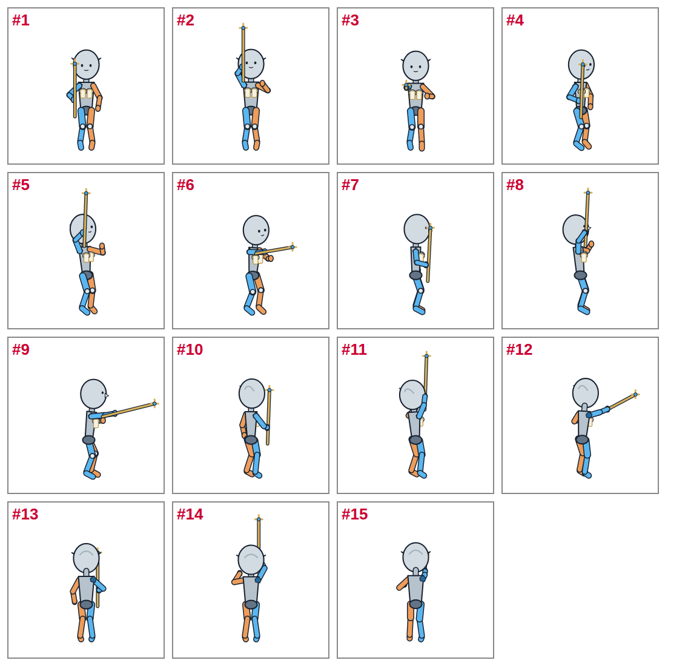
ポーズ一覧を保存

杖を掲げてから仲間へ向け、加護を与える（1/2）：15枚 添付のポーズ一覧の番号どおりに、1枚ずつ別の画像で描いてください。決まりは最初の文のとおりです。 #1 → healer__healer_buff__front__0.png 向き：正面（こちらを向く）／12コマのうち1コマ目（立つ） #2 → healer__healer_buff__front__4.png 向き：正面（こちらを向く）／12コマのうち5コマ目（掲げる） the staff raised high #3 → healer__healer_buff__front__8.png 向き：正面（こちらを向く）／12コマのうち9コマ目（授ける） the staff pointed at the one she blesses #4 → healer__healer_buff__down_right__0.png 向き：斜め前（体の正面が画面の右手前を向く）／12コマのうち1コマ目（立つ） #5 → healer__healer_buff__down_right__4.png 向き：斜め前（体の正面が画面の右手前を向く）／12コマのうち5コマ目（掲げる） the staff raised high #6 → healer__healer_buff__down_right__8.png 向き：斜め前（体の正面が画面の右手前を向く）／12コマのうち9コマ目（授ける） the staff pointed at the one she blesses #7 → healer__healer_buff__right__0.png 向き：真横（画面の右を向く横顔）／12コマのうち1コマ目（立つ） #8 → healer__healer_buff__right__4.png 向き：真横（画面の右を向く横顔）／12コマのうち5コマ目（掲げる） the staff raised high #9 → healer__healer_buff__right__8.png 向き：真横（画面の右を向く横顔）／12コマのうち9コマ目（授ける） the staff pointed at the one she blesses #10 → healer__healer_buff__up_right__0.png 向き：斜め後ろ（背中が見え、画面の右奥を向く）／12コマのうち1コマ目（立つ） #11 → healer__healer_buff__up_right__4.png 向き：斜め後ろ（背中が見え、画面の右奥を向く）／12コマのうち5コマ目（掲げる） the staff raised high #12 → healer__healer_buff__up_right__8.png 向き：斜め後ろ（背中が見え、画面の右奥を向く）／12コマのうち9コマ目（授ける） the staff pointed at the one she blesses #13 → healer__healer_buff__back__0.png 向き：後ろ（背中）／12コマのうち1コマ目（立つ） #14 → healer__healer_buff__back__4.png 向き：後ろ（背中）／12コマのうち5コマ目（掲げる） the staff raised high #15 → healer__healer_buff__back__8.png 向き：後ろ（背中）／12コマのうち9コマ目（授ける） the staff pointed at the one she blesses
2. 杖を掲げてから仲間へ向け、加護を与える（2/2） 9枚

ポーズ一覧を保存
杖を掲げてから仲間へ向け、加護を与える（2/2）：9枚 添付のポーズ一覧の番号どおりに、1枚ずつ別の画像で描いてください。決まりは最初の文のとおりです。 #1 → healer__healer_buff__up_left__0.png 向き：斜め後ろ（背中が見え、画面の左奥を向く）／12コマのうち1コマ目（立つ） #2 → healer__healer_buff__up_left__4.png 向き：斜め後ろ（背中が見え、画面の左奥を向く）／12コマのうち5コマ目（掲げる） the staff raised high #3 → healer__healer_buff__up_left__8.png 向き：斜め後ろ（背中が見え、画面の左奥を向く）／12コマのうち9コマ目（授ける） the staff pointed at the one she blesses #4 → healer__healer_buff__left__0.png 向き：真横（画面の左を向く横顔）／12コマのうち1コマ目（立つ） #5 → healer__healer_buff__left__4.png 向き：真横（画面の左を向く横顔）／12コマのうち5コマ目（掲げる） the staff raised high #6 → healer__healer_buff__left__8.png 向き：真横（画面の左を向く横顔）／12コマのうち9コマ目（授ける） the staff pointed at the one she blesses #7 → healer__healer_buff__down_left__0.png 向き：斜め前（体の正面が画面の左手前を向く）／12コマのうち1コマ目（立つ） #8 → healer__healer_buff__down_left__4.png 向き：斜め前（体の正面が画面の左手前を向く）／12コマのうち5コマ目（掲げる） the staff raised high #9 → healer__healer_buff__down_left__8.png 向き：斜め前（体の正面が画面の左手前を向く）／12コマのうち9コマ目（授ける） the staff pointed at the one she blesses
3. 杖で床を突き、清めの光を広げる（1/2） 15枚
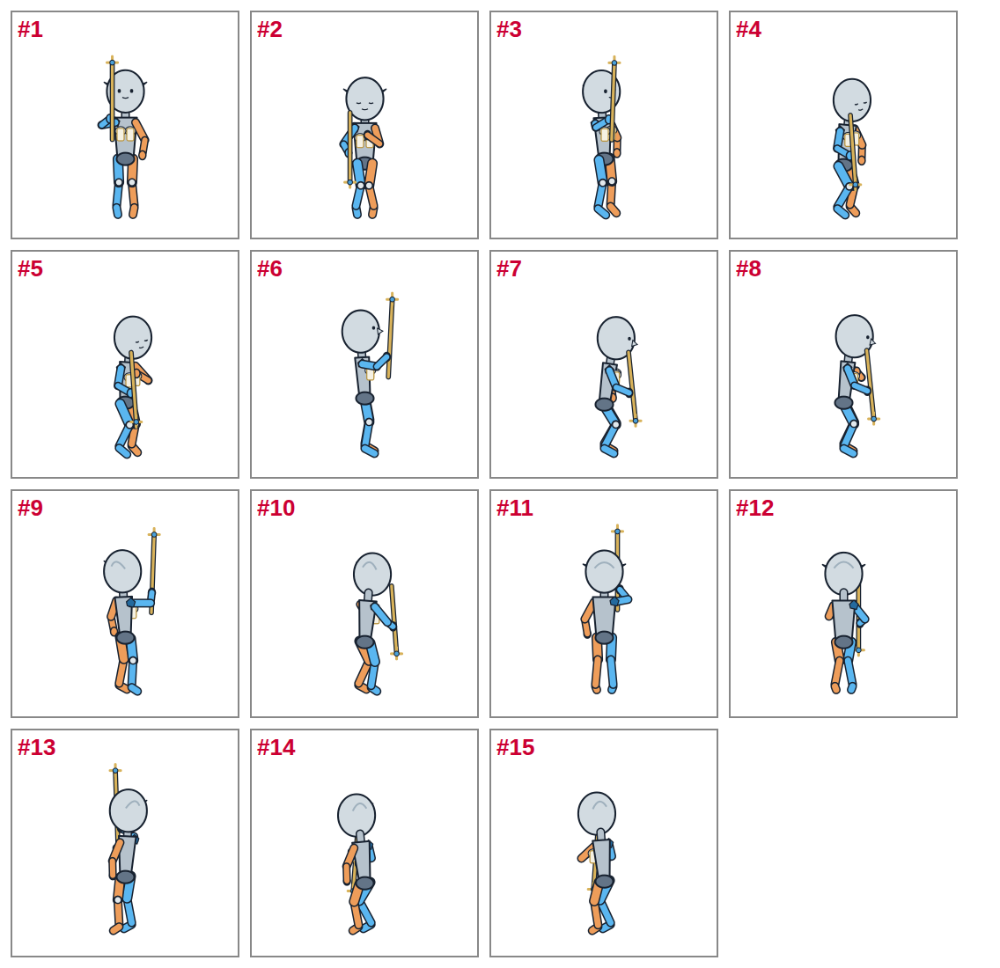
ポーズ一覧を保存

杖で床を突き、清めの光を広げる（1/2）：15枚 添付のポーズ一覧の番号どおりに、1枚ずつ別の画像で描いてください。決まりは最初の文のとおりです。 #1 → healer__healer_purify__front__3.png 向き：正面（こちらを向く）／13コマのうち4コマ目（持ち上げる） lifts the staff a little #2 → healer__healer_purify__front__9.png 向き：正面（こちらを向く）／13コマのうち10コマ目（祈る） holds it there, praying #3 → healer__healer_purify__down_right__3.png 向き：斜め前（体の正面が画面の右手前を向く）／13コマのうち4コマ目（持ち上げる） lifts the staff a little #4 → healer__healer_purify__down_right__6.png 向き：斜め前（体の正面が画面の右手前を向く）／13コマのうち7コマ目（突く） drives its foot to the floor: the light spreads #5 → healer__healer_purify__down_right__9.png 向き：斜め前（体の正面が画面の右手前を向く）／13コマのうち10コマ目（祈る） holds it there, praying #6 → healer__healer_purify__right__3.png 向き：真横（画面の右を向く横顔）／13コマのうち4コマ目（持ち上げる） lifts the staff a little #7 → healer__healer_purify__right__6.png 向き：真横（画面の右を向く横顔）／13コマのうち7コマ目（突く） drives its foot to the floor: the light spreads #8 → healer__healer_purify__right__9.png 向き：真横（画面の右を向く横顔）／13コマのうち10コマ目（祈る） holds it there, praying #9 → healer__healer_purify__up_right__3.png 向き：斜め後ろ（背中が見え、画面の右奥を向く）／13コマのうち4コマ目（持ち上げる） lifts the staff a little #10 → healer__healer_purify__up_right__9.png 向き：斜め後ろ（背中が見え、画面の右奥を向く）／13コマのうち10コマ目（祈る） holds it there, praying #11 → healer__healer_purify__back__3.png 向き：後ろ（背中）／13コマのうち4コマ目（持ち上げる） lifts the staff a little #12 → healer__healer_purify__back__9.png 向き：後ろ（背中）／13コマのうち10コマ目（祈る） holds it there, praying #13 → healer__healer_purify__up_left__3.png 向き：斜め後ろ（背中が見え、画面の左奥を向く）／13コマのうち4コマ目（持ち上げる） lifts the staff a little #14 → healer__healer_purify__up_left__6.png 向き：斜め後ろ（背中が見え、画面の左奥を向く）／13コマのうち7コマ目（突く） drives its foot to the floor: the light spreads #15 → healer__healer_purify__up_left__9.png 向き：斜め後ろ（背中が見え、画面の左奥を向く）／13コマのうち10コマ目（祈る） holds it there, praying
4. 杖で床を突き、清めの光を広げる（2/2） 6枚
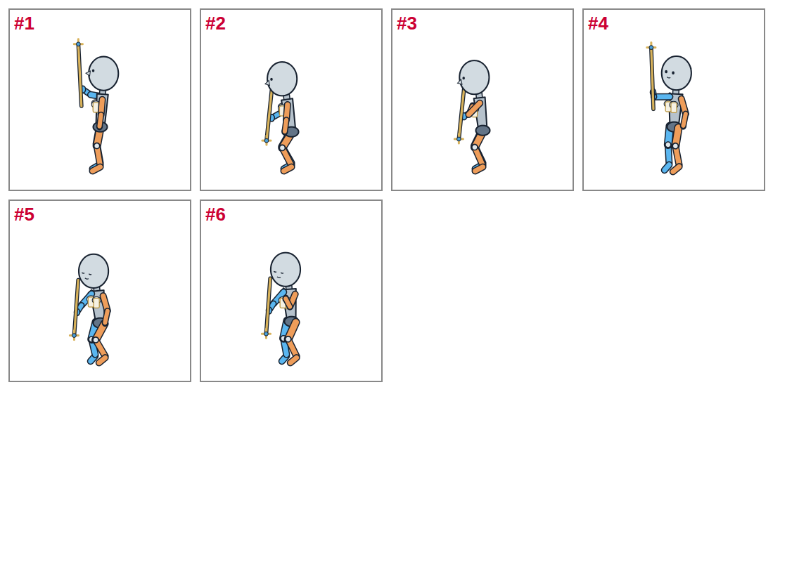
ポーズ一覧を保存

杖で床を突き、清めの光を広げる（2/2）：6枚 添付のポーズ一覧の番号どおりに、1枚ずつ別の画像で描いてください。決まりは最初の文のとおりです。 #1 → healer__healer_purify__left__3.png 向き：真横（画面の左を向く横顔）／13コマのうち4コマ目（持ち上げる） lifts the staff a little #2 → healer__healer_purify__left__6.png 向き：真横（画面の左を向く横顔）／13コマのうち7コマ目（突く） drives its foot to the floor: the light spreads #3 → healer__healer_purify__left__9.png 向き：真横（画面の左を向く横顔）／13コマのうち10コマ目（祈る） holds it there, praying #4 → healer__healer_purify__down_left__3.png 向き：斜め前（体の正面が画面の左手前を向く）／13コマのうち4コマ目（持ち上げる） lifts the staff a little #5 → healer__healer_purify__down_left__6.png 向き：斜め前（体の正面が画面の左手前を向く）／13コマのうち7コマ目（突く） drives its foot to the floor: the light spreads #6 → healer__healer_purify__down_left__9.png 向き：斜め前（体の正面が画面の左手前を向く）／13コマのうち10コマ目（祈る） holds it there, praying
5. 杖を立てて祈り、癒やす／嫌なものから顔を背け、胸をかばって杖で遮る／前垂れを押さえて胸を隠しながら立つ／倒れた仲間のそばに膝をつき、杖を立てて片手をかざして癒やす／胸を押さえながら走る（揺れを抑えようとする）／人目を避けてひざまずき、ひそかに別の神へ祈る 8枚
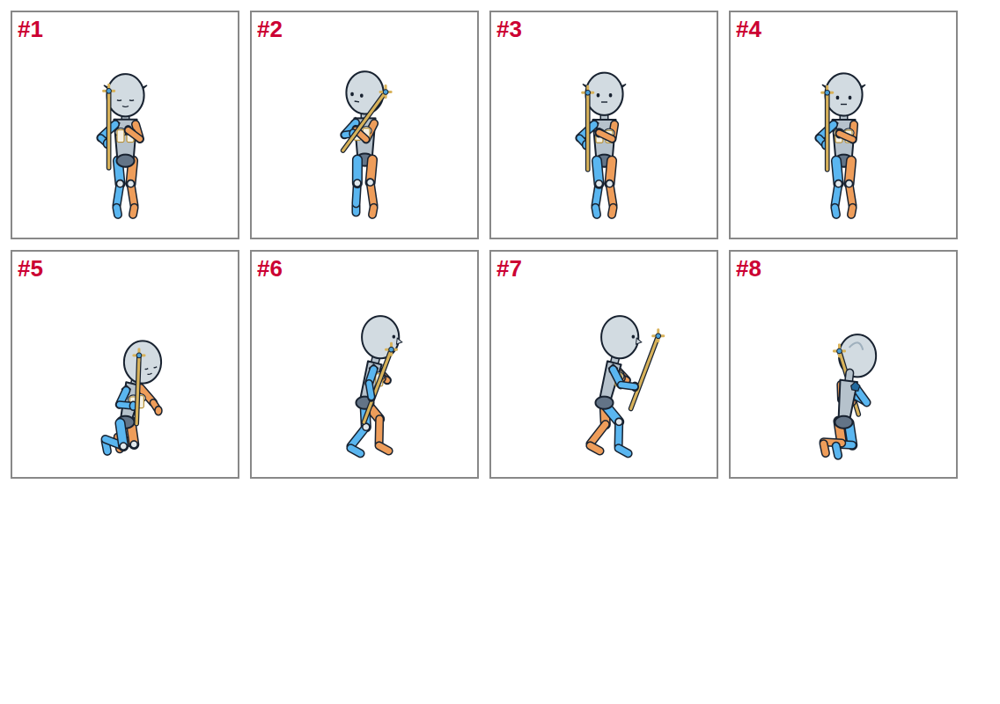
ポーズ一覧を保存

杖を立てて祈り、癒やす／嫌なものから顔を背け、胸をかばって杖で遮る／前垂れを押さえて胸を隠しながら立つ／倒れた仲間のそばに膝をつき、杖を立てて片手をかざして癒やす／胸を押さえながら走る（揺れを抑えようとする）／人目を避けてひざまずき、ひそかに別の神へ祈る：8枚 添付のポーズ一覧の番号どおりに、1枚ずつ別の画像で描いてください。決まりは最初の文のとおりです。 #1 → healer__healer_pray__front__0.png 杖を立てて祈り、癒やす／向き：正面（こちらを向く）／8コマのうち1コマ目 the staff upright, the other hand at her breast, head bowed, eyes closed, breathing slowly #2 → healer__healer_disgust__front__4.png 嫌なものから顔を背け、胸をかばって杖で遮る／向き：正面（こちらを向く）／9コマのうち5コマ目（拒む） recoils: turns her face away, an arm across her chest, the staff held across as a bar #3 → healer__healer_disgust__front__8.png 嫌なものから顔を背け、胸をかばって杖で遮る／向き：正面（こちらを向く）／9コマのうち9コマ目（構え直す） straightens, still covering herself #4 → healer__healer_cover__front__0.png 前垂れを押さえて胸を隠しながら立つ／向き：正面（こちらを向く）／8コマのうち1コマ目 an arm across her chest holding the front panels down; as she sways they would lift #5 → healer__healer_kneel_heal__down_right__0.png 倒れた仲間のそばに膝をつき、杖を立てて片手をかざして癒やす／向き：斜め前（体の正面が画面の右手前を向く）／8コマのうち1コマ目 kneeling, the staff upright in her right hand, the left hand held out low over the one she heals, eyes closed #6 → healer__healer_run_cover__right__0.png 胸を押さえながら走る（揺れを抑えようとする）／向き：真横（画面の右を向く横顔）／8コマのうち1コマ目 running, one arm clamped across her chest against the bounce, the staff held tilted up in the other hand #7 → healer__healer_run_cover__right__4.png 胸を押さえながら走る（揺れを抑えようとする）／向き：真横（画面の右を向く横顔）／8コマのうち5コマ目 running, one arm clamped across her chest against the bounce, the staff held tilted up in the other hand #8 → healer__healer_dark_prayer__up_right__5.png 人目を避けてひざまずき、ひそかに別の神へ祈る／向き：斜め後ろ（背中が見え、画面の右奥を向く）／13コマのうち6コマ目（祈る） kneels, the staff held against her, the hands clasped the other way round, head low, eyes open